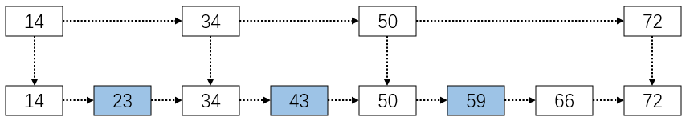
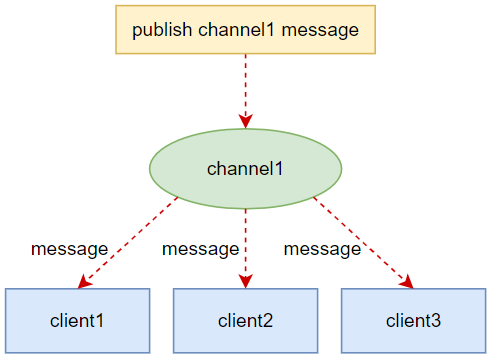

Redis
简介
Redis（Remote Dictionary Server )，即远程字典服务，是一个开源的使用ANSI C语言编写、支持网络、可基于内存亦可持久化的日志型、Key-Value数据库，并提供多种语言的API。它通常被称为数据结构服务器，因为值（value）可以是字符串（String）、列表（List）、集合（Set）、哈希（Hash）和有序集合（Zset）等类型。
特点：
- Redis支持数据的持久化，可以将内存中的数据保存在磁盘中，重启的时候可以再次加载进行使用。
- Redis不仅仅支持简单的key-value类型的数据，同时还提供list、set、hash等数据结构的存储。
- Redis支持数据的备份，即master-slave（主从）模式的数据备份。
- Redis的所有操作都是原子性的，意思就是要么成功执行要么失败完全不执行。
安装
Windows安装
下载地址：https://github.com/tporadowski/redis/releases
安装步骤：
下载Redis-x64-xxx.zip压缩包，解压并将文件夹重新命名为redis。
打开命令行窗口，切换到redis安装目录下，执行下方命令：
.\redis-server.exe redis.windows.conf
命令中的
redis.windows.conf可以省略，如果省略则表示使用默认配置。测试：重新打开一个命令行窗口并切换到redis安装目录下，
原先的命令行窗口不关闭，否则无法访问服务端。执行下方命令：.\redis-cli.exe -h 127.0.0.1 -p 6379
# 示例
(base) PS F:\environment\redis> .\redis-cli.exe -h 127.0.0.1 -p 6379
127.0.0.1:6379> set myKey abc # 设置键值对
OK
127.0.0.1:6379> get myKey # 取出键值对
"abc"
Linux安装
安装步骤：
下载并安装
wget http://download.redis.io/releases/redis-6.0.8.tar.gz
tar xzf redis-6.0.8.tar.gz
cd redis-6.0.8
make执行完
make命令，redis-6.0.8的src目录下会出现编译后的redis服务程序redis-server，还有用于测试的客户端程序redis-cli。安装redis时出现以下错误：
解决方法：升级gcc到最新版本，执行下方命令：
# 查看版本
gcc -v
# 高版本的redis需要更高版本的gcc，云安装的gcc版本4.8.5，需要升级gcc
# 升级gcc
yum -y install centos-release-scl
yum -y install devtoolset-9-gcc devtoolset-9-gcc-c++ devtoolset-9-binutils
scl enable devtoolset-9 bash
echo "source /opt/rh/devtoolset-9/enable" >>/etc/profile
# a
make启动redis服务
cd redis-6.0.8/src
./redis-server这种方式启动redis时使用的是默认配置，也可以通过启动参数指定配置文件，命令如下：
./redis-server ../redis.conf
redis.conf是一个默认的配置文件，可以根据需要使用自己的配置文件。redis默认不是后台启动，可修改配置文件进行设置。
测试：启动redis服务进程后，就可以使用测试客户端程序
redis-cli和redis服务进行交互了。执行下方命令：cd redis-6.0.8/src
./redis-cli
# 示例
set myKey abc # 设置键值对
get myKey # 取出键值对查看redis进程：
ps -ef|grep redis关闭redis服务：
- 方式一：在redis-cli下执行shutdown命令。
- 方式二：使用kill命令停止redis进程，即执行
kill -9 pid命令。
Redis配置
Redis配置文件位于Redis安装目录下，Windows中文件名为redis.windows.conf，Linux中文件名为redis.conf，可以通过config命令查看或编辑配置项。
查看配置：
# 语法 |
编辑配置：可以通过修改redis.conf文件或使用config set命令来修改配置。
# 语法 |
数据类型
Redis支持五种数据类型：
- 字符串：String
- 列表：List
- 集合：Set
- 哈希：Hash
- 有序集合：Zset
注意：这里说的数据类型指的是value的数据类型，而key的类型都是字符串。
键（Key）
常用命令：
- keys *：查看当前库所有的key
- exists key：判断key是否存在
- keys pattern：查找所有符合给定模式pattern的key
- del key [key …]：删除一个或多个key
- type key：返回key所储存的值对应的类型
- del key：删除指定的key，阻塞删除
- unlink key：删除指定的key，非阻塞删除，只是将键与键空间断开连接，实际的删除将稍后异步进行
- expire key seconds：为key设置过期时间，以秒计
- pexpire key millisecnds：为key设置过期时间，以毫秒计
- persist key：移除key的过期时间，key将持久保持
- ttl key：以秒为单位返回key的剩余过期时间，-1：表示永不过期，-2：表示已过期
- pttl key：以毫秒为单位返回key的剩余过期时间
- rename key newkey：修改key的名称，若newkey已存在，则覆盖
- renamenx key newkey：仅当newkey不存在时，将key改名为newkey
- select dbindex：切换数据库[0-15]，默认为0
- dbsize：查看当前数据库key的数量
- flushdb：清空当前库
- flushall：通杀全部库
- move key db：将当前数据库的key移动到指定的数据库db中
- randomkey：从当前数据库中随机返回一个key
字符串（String）
简介
String类型是Redis最基本的数据类型，String类型的值最大能存储512MB。
String类型是二进制安全的，意思是Redis的String可以包含任何数据，比如图片或者序列化的对象。
添加键值对：
set key value [expiration EX seconds|PX milliseconds] [NX|XX] |
- EX seconds：将键的过期时间设置为seconds秒。执行SET key value EX seconds的效果等同于执行SETEX key seconds value。
- PX milliseconds：将键的过期时间设置为milliseconds毫秒。执行SET key value PX milliseconds的效果等同于执行PSETEX key milliseconds value。
- NX：只在键不存在时，才对键进行设置操作。执行SET key value NX的效果等同于执行SETNX key value。
- XX：只在键已经存在时，才对键进行设置操作。
在Redis 2.6.12版本以前，SET命令总是返回OK。从Redis 2.6.12版本开始，SET命令只在设置操作成功完成时才返回OK；如果命令使用了NX或者XX选项，但是因为条件没达到而造成设置操作未执行，那么命令将返回nil。
注意：value中若包含空格、特殊字符，需用双引号包裹。
常用命令
get key：获取key对应的value。
setnx key value：只有在key不存在时设置key的值。
append key value：如果key已存在且是一个字符串，则将value追加到原值的末尾；若key不存在，则设置该键值对。
strlen key：返回key所存储的字符串值的长度。
incr key：将key中存储的数字值增一，值需要为整形，否则会报错。若key不存在，则自动创建，且值为1。
decr key：将key中存储的数字值减一，值需要为整形，否则会报错。若key不存在，则自动创建，且值为-1。
incrby key increment：将key存储的值加上给定值increment（整形），key存储的值需要为整形。若key不存在，则相当于在0的基础上进行增加。
decrby key decrement：将key存储的值减去给定值increment（整形），key存储的值需要为整形。若key不存在，则相当于在0的基础上进行减少。
incrbyfloat key increment：将key存储的值加上给定的浮点型增量值increment，key存储的值可以是整形或浮点型。
mset key value [key value …]：设置一个或多个键值对。
mget key [key …]：获取一个或多个key对应的值。
msetnx key value [key value …]：设置一个或多个键值对，当且仅当所有给定的key都不存在。
原子性操作，要么都成功，要么都失败。
getrange key start end：返回key从start到end位置的值（包括结束位置）。
setrange key offset value：从偏移量offset位置开始，用value替换key相应位置的值。
setex key seconds value：将value关联到key，并将key的过期时间设置为seconds，以秒为单位。
psetex key milliseconds value：与setex命令相似，但它以毫秒为单位。
getset key value：将key的值设置为value，并返回key的旧值。若key不存在，则将key的值设置为value，并返回nil。
数据结构
String的数据结构为简单动态字符串（Simple Dynamic String，缩写SDS），是可以修改的字符串，内部结构上类似于Java的ArrayList，采用分配冗余空间的方式来减少内存的频繁分配。
如上图所示，内部为当前字符串实际分配的空间capacity一般要高于实际字符串长度len。当字符串长度小于1M时，扩容都是加倍现有的空间，如果超过1M，扩容时一次会多扩容1M的空间。
列表（List）
简介
列表：单键多值。
Redis列表是简单的字符串列表，按照插入顺序排序，可以添加一个元素到列表的头部或尾部，其底层为双向链表，对两端的操作性能很高，通过索引下标操作中间节点性能较差。
一个列表最多可以存储2^32^ - 1个元素。
常用命令
lpush key value [value …]：将一个或多个值插入到列表头部。
rpush key value [value …]：将一个或多个值插入到列表尾部。
lpushx key value：将一个值插入到已存在的列表头部。
rpushx key value：将一个值插入到已存在的列表尾部。
llen key：获取列表长度。如果key不存在，则key被解释为一个空列表，返回0。
lrange key start stop：返回列表指定区间内的元素，可以使用负数下标，以-1表示列表的最后一个元素，-2表示列表的倒数第二个元素。
lindex key index：获取指定位置的元素，可以使用负数下标。如果下标越界，则返回nil。
lpop key：移出并获取列表的第一个元素。
rpop key：移出并获取列表的最后一个元素。
rpoplpush source destination：移除并获取列表的最后一个元素，并将该元素添加到另一个列表的头部。
lset key index value：替换指定位置的值。当index参数超出范围，或对一个空列表（key不存在）进行lset操作时，返回一个错误。
linsert key BEFORE|AFTER pivot value：将值value插入到列表key当中，位于值pivot之前或之后。
当pivot不存在于列表key时，不执行任何操作，返回-1。
当key不存在时，key被视为空列表，不执行任何操作。
如果key不存在或为空列表，返回0。
lrem key count value：根据参数count的值，移除列表中与参数value相等的元素。
count的值可以是以下几种：
- count > 0：从表头开始向表尾搜索，移除与value相等的元素，数量为count。
- count < 0：从表尾开始向表头搜索，移除与value相等的元素，数量为count的绝对值。
- count = 0：移除表中所有与value相等的值。
返回值为被移除元素的数量。
因为不存在的key被视作空列表，所以当key不存在时，返回0。
ltrim key start stop：对列表进行修剪，即只保留指定区间内的元素，不在区间内的元素都将被删除。
数据结构
List的数据结构为快速链表quickList。
在列表元素较少的情况下会使用一块连续的内存存储，这个结构是ziplist，也就是压缩列表，它将所有的元素紧挨着一起存储，分配的是一块连续的内存。当列表元素比较多的时候才会改成quickList。因为普通的链表需要的附加指针空间太大，会比较浪费空间，比如这个列表里存储的只是int类型的数，结构上还需要2个额外的指针prev和next。
redis将链表和ziplist结合起来组成了quicklist，也就是将多个ziplist使用双向指针串起来使用，这样既满足了快速的插入删除性能，又不会出现太大的空间冗余。
集合（Set）
简介
redis的set是string类型的无序集合，底层实际上是一个value为null的hash表，因此添加、删除、查找的复杂度都是O(1)。
集合成员唯一，且集合中最大成员数为2^32^ - 1。
常用命令
sadd key member [member …]：向集合添加一个或多个成员。
smembers key：返回集合中的所有成员。
scard key：获取集合的成员数，当key不存在时返回0。
sismember key member：判断member元素是否是集合key的成员，返回值为0或1。
srem key member [member …]：移除集合中一个或多个成员，不存在的成员会被忽略。
spop key [count]：移除集合中一个或多个随机元素，移除后会返回被移除的元素。当key不存在或key是空集时，返回nil。
srandmember key [count]：返回集合中一个或多个随机元素。
只提供key参数时返回一个元素；如果集合为空，返回nil。
如果提供了count参数，那么返回一个数组；如果集合为空，返回空数组。
smove source destination member：将member元素从source集合移动到destination集合。
smove是原子性操作。
如果source集合不存在或不包含指定的member元素，则smove命令不执行任何操作，仅返回0。否则member元素从source集合中被移除，并添加到destination集合中去。
当destination集合已经包含member元素时，smove命令只是简单地将source集合中的member元素删除。
sinter key [key …]：返回给定集合的交集。
sinterstore destination key [key …]：将给定集合之间的交集存储在指定的集合中。如果指定的集合已存在，则将其覆盖。
sunion key [key …]：返回给定集合的并集，并自动去重。
sunionstore destination key [key …]：将给定集合之间的并集存储在指定的集合中。如果指定的集合已存在，则将其覆盖。
sdiff key [key …]：返回第一个集合与其他集合之间的差异，即第一个集合中独有的元素。不存在的集合key将视为空集。
sdiffstore destination key [key …]：将给定集合之间的差集存储在指定的集合中。如果指定的集合已存在，则将其覆盖。
数据结构
set的数据结构是字典，字典是用hash表实现的。
Java中的HashSet的内部实现使用HashMap，只不过所有的value都指向同一个对象。Redis的set结构也是一样的，它的内部也使用hash结构，所有的value都指向同一个内部值。
哈希（Hash）
简介
Redis hash是一个键值对集合。
Redis hash是一个String类型的字段field和值value的映射表，适用于存储对象，每个hash可以存储2^32^ - 1个键值对（40多亿）。
常用命令
hset key field value：将哈希表key中的字段field的值设为value。
可设置多个field，例如：hset user name ready age 30
hmset key field value [field value …]：将多个field-value对设置到哈希表key中。
hdel key field [field …]：删除一个或多个哈希表字段。
hlen key：获取哈希表中字段的数量。
hget key field：获取哈希表中指定字段的值。
hgetall key：获取哈希表中所有字段和值。
hmget key field [field …]：获取所有给定字段的值。
hkeys key：获取哈希表中所有字段。
hvals key：获取哈希表所有字段对应的值。
hexists key field：检测哈希表key中指定字段是否存在，存在则返回1，否则返回0。如果key不存在，则返回0。
hincrby key field increment：为哈希表指定字段的整数值加上增量increment。
如果字段field不存在，那么在执行命令前字段field的值被初始化为0。
如果哈希表key不存在，则先创建哈希表key并执行hincrby命令。
hincrbyfloat key field increment：为哈希表指定字段的值加上给定的浮点型增量值increment。
hsetnx key field value：只有在字段field不存在时，设置哈希表字段的值。如果哈希表key不存在，则先创建哈希表key并执行hsetnx命令。
数据结构
Hash类型对应的数据结构有两种：ziplist（压缩列表）、hashtable（哈希表）。
当field-value长度较短个数较少时使用ziplist，否则使用hashtable。
Redis中hash可以像数据库update一样，只修改某一项属性值，而Memcached中需要取出整个字符串反序列化成对象，修改完再序列化存回去。
有序集合（Zset）
简介
Redis zset和set一样也是String类型元素的集合，且不允许重复的成员。不同的是每个元素都会关联一个分数（score），Redis正是通过分数来为集合中的成员进行从小到大的排序。
zset的成员是唯一的，但分数却可以重复。
常用命令
zadd key score member [score member …]：向有序集合添加一个或多个成员。
如果某个member已经是有序集合的成员，那么更新这个member的score值，并通过重新插入这个member元素来保证该member在正确的位置上。
score值可以是整数值或双精度浮点数。
zrange key start stop [WITHSCORES]：返回有序集中指定区间内的成员，其中成员的位置按分数值递增来排序，具有相同分数值的成员按字典序来排列。
可以使用负数下标，以-1表示最后一个成员，-2表示倒数第二个成员，以此类推。
withscores：让成员和它的score值一并返回，返回列表以value1, score1, … valueN, scoreN的格式表示。
zrevrange key start stop [WITHSCORES]：返回有序集中指定区间内的成员，其中成员的位置按分数值递减来排列，具有相同分数值的成员按字典序的逆序排列。
zrangebyscore key min max [WITHSCORES] [LIMIT offset count]：返回有序集合中指定分数区间（闭区间）的成员列表，按分数值递增排列，具有相同分数值的成员按字典序来排列。
可选的LIMIT参数指定返回结果的数量及区间（类似于SQL中的SELECT LIMIT offset, count)。
zrevrangebyscore key max min [WITHSCORES] [LIMIT offset count]：返回有序集中指定分数区间内的所有的成员，按分数值递减次序排列，具有相同分数值的成员按字典序的逆序排列。
zcard key：获取有序集合的成员数。
zcount key min max：计算有序集合中指定分数区间（闭区间）的成员数量。
zrank key member：返回有序集合中指定成员的索引（即排名，从0开始）。
zrevrank key member：返回有序集合中指定成员的索引，有序集成员按分数值递减排序。
zscore key member：返回有序集中成员的分数值。如果member元素不是有序集key的成员，或key不存在，返回nil。
zincrby key increment member：对有序集合中指定成员的分数加上增量increment。
当key不存在，或member不是key的成员时，zincrby key increment member等同于zadd key increment member。
zrem key member [member …]：移除有序集合中的一个或多个成员，不存在的成员将被忽略。
zremrangebyrank key start stop：移除有序集合中给定排名区间内（闭区间）的所有成员。
zremrangebyscore key min max：移除有序集合中给定分数区间内（闭区间）的所有成员。
zlexcount key min max：计算有序集合中指定字典区间内成员数量。
127.0.0.1:6379> zadd key1 0 a 0 b 0 c 0 d 0 e 0 f
(integer) 6
127.0.0.1:6379> zlexcount key1 - +
(integer) 6
127.0.0.1:6379> zlexcount key1 [b [f
(integer) 5zrangebylex key min max [LIMIT offset count]：通过字典区间返回有序集合的成员。
zrangebyscore key min max [WITHSCORES] [LIMIT offset count]
默认情况下，区间的取值使用闭区间（小于等于或大于等于），也可以通过给参数前增加
(符号来使用可选的开区间（小于或大于）。zrangebyscore key (1 5
# 返回所有符合条件 1 < score <= 5 的成员
zrangebyscore key (5 (10
# 返回所有符合条件 5 < score < 10 的成员zremrangebylex key min max：移除有序集合中给定字典区间内的所有成员。
zinterstore destination numkeys key [key …]：计算给定的一个或多个有序集的交集，其中给定key的数量必须以numkeys参数指定，并将该交集（结果集）储存到destination中。
默认情况下，结果集中某个成员的分数值是所有给定集下该成员分数值之和。
zunionstore destination numkeys key [key …]：计算给定的一个或多个有序集的并集，其中给定key的数量必须以numkeys参数指定，并将该并集（结果集）储存到destination中。
默认情况下，结果集中某个成员的分数值是所有给定集下该成员分数值之和 。
数据结构
zset是redis提供的一个非常特别的数据类型，其内部使用了2种数据结构：
hash表
类似于java中的Map<String, score>，key为集合中的元素，value为元素对应的score，可以用来快速定位元素定义的score，时间复杂度为O(1)。
跳表
跳表（skiplist）是一个非常优秀的数据结构，实现简单，插入、删除、查找的复杂度均为O(logN)。
类似java中的ConcurrentSkipListSet，根据score的值排序后生成的一个跳表，可以快速按照位置的顺序或者score的顺序查询元素。
跳表的原理：
首先从考虑一个有序表开始：
从该有序表中搜索元素<23, 43, 59>，需要比较的次数分别为<2, 4, 6>，总共比较的次数为2 + 4 + 6 = 12次。有没有优化的算法吗？链表是有序的，但不能使用二分查找。类似二叉搜索树，我们把一些节点提取出来，作为索引，得到如下结构：
这里我们把<14, 34, 50, 72>提取出来作为一级索引，这样搜索的时候就可以减少比较次数了。我们还可以再从一级索引提取一些元素出来，作为二级索引，变成如下结构：
这里元素不多，体现不出优势，如果元素足够多，这种索引结构就能体现出优势来了。
Redis新的3种数据类型
Bitmaps：位操作字符串
简介
现代计算机使用二进制（位）作为信息的基本单位，1个字节等于8位，例如“abc”字符串是由3个字节组成，但实际在计算机内存储时将其使用二进制表示，“abc”分别对应的ASCII码是：97、98、99，对应的二进制分别是01100001、01100010、01100011，如下图：
合理地使用位操作能够有效地提高内存使用率和开发效率。
Redis提供了Bitmaps这种“数据类型”来实现对位的操作：
- Bitmaps本身不是一种数据类型，实际上它就是字符串，但是它可以对字符串的位进行操作，字符串中每个字符对应1个字节，也就是8位，一个字符可以存储8个bit位信息。
- Bitmaps单独提供了一套命令，所以在Redis中使用Bitmaps和使用字符串的方法不太相同。可以把Bitmaps想象成一个以位为单位的数组，数组的每个单元只能存储0和1，数组的下标在Bitmaps中叫做偏移量。
常用命令
setbit：设置某个偏移位的值（0或1）
setbit key offset value
设置offset偏移位的值为value，offset的值从0开始，n代表第n+1个bit位。
offset参数必须大于或等于0，小于2^32（bit映射被限制在512MB之内）。
value的值只能为0或1。
返回值：指定偏移量原来储存的位。
127.0.0.1:6379> setbit bit 100 1
(integer) 0
127.0.0.1:6379> getbit bit 100
(integer) 1
127.0.0.1:6379> getbit bit 101 # bit默认被初始化为0
(integer) 0示例：
每个独立用户是否访问过网站存放在bitmaps中，将访问的用户记做1，没有访问的用户记做0，用户id作为offset。
假设现在有20个用户，userid=1, 6, 11, 15, 19的用户对网站进行了访问，那么当前bitmaps初始化结果如图：
users:20220409这个bitmaps中表示2022-04-09这天独立访问的用户，如下：
127.0.0.1:6379> setbit users:20220409 1 1
(integer) 0
127.0.0.1:6379> setbit users:20220409 6 1
(integer) 0
127.0.0.1:6379> setbit users:20220409 11 1
(integer) 0
127.0.0.1:6379> setbit users:20220409 15 1
(integer) 0
127.0.0.1:6379> setbit users:20220409 19 1
(integer) 0getbit：获取key所对应的bitmaps中offset偏移位的值，返回值为0或1。
bitcount：统计bit位都为1的数量
bitcount key [start end]
统计字符串被设置为1的bit数。一般情况下，给定的整个字符串都会进行统计，通过指定额外的start或者end参数，可以让计数只在特定的位上进行。
start和end参数，都可以使用负数值：比如-1表示最后一个位，而-2表示倒数第二个位，以此类推。
注意：start、end是指bit组字节的下标数，一个字节对应8个bit，所以[a, b]对应的offset范围是[8a, 8b+7]。
127.0.0.1:6379> flushdb
OK
127.0.0.1:6379> setbit user 7 1
(integer) 0
127.0.0.1:6379> setbit user 15 1
(integer) 0
127.0.0.1:6379> setbit user 23 1
(integer) 0
127.0.0.1:6379> bitcount user # 获取user这个bitmaps中1的数量
(integer) 3
127.0.0.1:6379> bitcount user 0 1 # 获取[0,1]这个字节内bit位上1的数量，也就是offset是[0,15]的位置上1的数量，所以结果为2
(integer) 2
127.0.0.1:6379> bitcount user 0 0 # 获取[0,0]这个字节内bit位上1的数量，也就是offset是[0,7]的位置上1的数量，只有7这个位置，所以结果为1
(integer) 1bitop：对一个或多个bitmaps执行位操作
bitop operation destkey key [key ...]
对一个或多个保存二进制位的字符串key进行位元操作，并将结果保存到destkey上。
operation可以是AND、OR、NOT、XOR这四种操作中的任意一种：
- AND：对一个或多个key求逻辑并，并将结果保存到destkey。
- OR：对一个或多个key求逻辑或，并将结果保存到destkey。
- XOR：对一个或多个key求逻辑异或，并将结果保存到destkey。
- NOT：对给定key求逻辑非，并将结果保存到destkey。
除了NOT操作之外，其他操作都可以接受一个或多个key作为输入。
返回值：保存到destkey的字符串长度和输入key中最长的字符串长度相等。
127.0.0.1:6379> flushdb
OK
127.0.0.1:6379> setbit bit-1 0 1 # bit-1 = 1001
(integer) 0
127.0.0.1:6379> setbit bit-1 3 1
(integer) 0
127.0.0.1:6379> setbit bit-2 0 1 # bit-2 = 1011
(integer) 0
127.0.0.1:6379> setbit bit-2 1 1
(integer) 0
127.0.0.1:6379> setbit bit-2 3 1
(integer) 0
127.0.0.1:6379> bitop and and-result bit-1 bit-2
(integer) 1
127.0.0.1:6379> getbit and-result 0 # and-result = 1001
(integer) 1
127.0.0.1:6379> getbit and-result 1
(integer) 0
127.0.0.1:6379> getbit and-result 2
(integer) 0
127.0.0.1:6379> getbit and-result 3
(integer) 1
bitmaps与set比较
假设网站有1亿用户，每天独立访问的用户有5千万，如果每天用集合类型和Bitmaps分别存储活跃用户，对比如下：
set和Bitmaps存储一天活跃用户对比：
| 数据类型 | 每个用户id占用空间 | 需要存储的用户量 | 全部内存量 |
|---|---|---|---|
| set集合 | 64位 | 50000000 | 64位 * 50000000 = 400MB |
| Bitmaps | 1位 | 100000000 | 1位 * 100000000 = 12.5MB |
很明显，这种情况下使用Bitmaps能节省很多的内存空间，尤其是随着时间推移节省的内存还是非常可观的。
set和Bitmaps存储独立用户空间对比：
| 数据类型 | 一天 | 一月 | 一年 |
|---|---|---|---|
| set集合 | 400MB | 12GB | 144GB |
| Bitmaps | 12.5MB | 375MB | 4.5GB |
但Bitmaps并不是万金油，假如该网站每天的独立访问用户很少，例如只有10万（大量的僵尸用户），那么两者的对比如下表所示，很显然，这时候使用Bitmaps就不太合适了，因为大部分位都是0。
| 数据类型 | 每个用户id占用空间 | 需要存储的用户量 | 全部内存量 |
|---|---|---|---|
| set集合 | 64位 | 100000 | 64位 * 100000 = 800KB |
| Bitmaps | 1位 | 100000000 | 1位 * 100000000 = 12.5MB |
HyperLoglog
简介
在工作当中，我们经常会遇到与统计相关的功能需求，比如统计网站PV（PageView页面访问量），可以使用Redis的incr、incrby轻松实现。但像UV（UniqueVisitor独立访客）、独立IP数、搜索记录数等需要去重和计数的问题如何解决？这种求集合中不重复元素个数的问题称为基数问题。
解决基数问题有很多种方案：
- 数据存储在MySQL表中，使用distinct count计算不重复个数。
- 使用Redis提供的hash、set、bitmaps等数据结构来处理。
以上的方案结果精确，但随着数据不断增加，导致占用空间越来越大，对于非常大的数据集是不切实际的。能否降低一定的精度来平衡存储空间？Redis推出了HyperLogLog。
Redis HyperLogLog是用来做基数统计的算法，HyperLogLog的优点是：在输入元素的数量或者体积非常非常大时，计算基数所需的空间总是固定的、并且是很小的。
在Redis里面，每个HyperLogLog键只需要花费12KB内存，就可以计算接近2^64个不同元素的基数。这和计算基数时，元素越多耗费内存就越多的集合形成鲜明对比。但是，因为HyperLogLog只会根据输入元素来计算基数，而不会储存输入元素本身，所以HyperLogLog不能像集合那样，返回输入的各个元素。
什么是基数？
比如数据集{1, 3, 5, 7, 5, 7, 8}，这个数据集的基数集为{1, 3, 5 ,7, 8}，基数（不重复元素）个数为 5。基数估计就是在误差可接受的范围内，快速计算基数。
常用命令
pfadd：添加多个元素
pfadd key element [element ...]
向HyperLoglog类型的key中添加一个或者多个元素。
返回值：1表示添加成功，0表示添加失败。127.0.0.1:6379> flushdb
OK
127.0.0.1:6379> pfadd program java c c++ python # 向program中添加4个元素java、c、c++、python，添加成功，返回1
(integer) 1
127.0.0.1:6379> pfadd program java # 再次添加java，由于已经存在，所以添加失败，返回0
(integer) 0
127.0.0.1:6379> pfadd program java js # 再次添加2个元素，其中java已经存在，但js不存在，添加成功，返回1
(integer) 1pfcount：获取多个HLL合并后元素的个数
pfcount key [key ...]
统计一个或者多个key去重后元素的数量。
127.0.0.1:6379> flushdb
OK
127.0.0.1:6379> pfadd uv1 a b c d e
(integer) 1
127.0.0.1:6379> pfcount uv1
(integer) 5
127.0.0.1:6379> pfadd uv2 b c d e f
(integer) 1
127.0.0.1:6379> pfcount uv1
(integer) 5
127.0.0.1:6379> pfcount uv1 uv2 # uv1和uv2合并去重后为[a, b, c ,d, e, f]
(integer) 6pfmerge：将多个HLL合并后元素放入另外一个HLL中
pfmerge destkey sourcekey [sourcekey ...]
将多个sourcekey合并后放入destkey中。
127.0.0.1:6379> pfmerge uv_dest uv1 uv2 # 将uv1和uv2合并后放入uv_dest
OK
127.0.0.1:6379> pfcount uv_dest
(integer) 6
Geographic
简介
Reids3.2中增加了对GEO类型的支持，GEO（Geographic），地理信息的缩写。该类型，就是元素的2维坐标，在地图上就是经纬度，redis基于该类型，提供了经纬度设置、查询、范围查询、距离查询，经纬度Hash等常见操作。
常用命令
geoadd：添加多个位置的经纬度
geoadd key longitude latitude member [longitude latitude member ...]
longitude latitude member：经度 纬度 名称
127.0.0.1:6379> flushdb
OK
127.0.0.1:6379> geoadd china:city 121.47 31.23 shanghai # 添加上海的经纬度
(integer) 1
127.0.0.1:6379> geoadd china:city 106.50 29.53 chongqing 114.05 22.52 shenzhen 116.38 39.90 beijing # 添加重庆、深圳、北京3个城市的经纬度
(integer) 3
127.0.0.1:6379> type china:city # 发现geo实际上是使用zset类型存储的
zset
127.0.0.1:6379> zrange china:city 0 -1
1) "chongqing"
2) "shenzhen"
3) "shanghai"
4) "beijing"
127.0.0.1:6379> zrange china:city 0 -1 withscores
1) "chongqing"
2) "4026042091628984"
3) "shenzhen"
4) "4046432193584628"
5) "shanghai"
6) "4054803462927619"
7) "beijing"
8) "4069885332386336"两级无法直接添加，一般会下载城市数据，直接通过java程序一次性导入。
有效的经度从-180度到180度，有效的纬度从-85.05112878度到85.05112878度。
当坐标位置超出指定范围时，该命令将会返回一个错误。
已经添加的数据，是无法再次往里面添加的。
geopos：获取多个位置的坐标值
geopos key member [member ...]
127.0.0.1:6379> geopos china:city wuhan beijing chongqing # 获取武汉、北京、重庆3个城市的坐标，由于没有添加武汉的数据，所以没有获取到
1) (nil)
2) 1) "116.38000041246414185"
2) "39.90000009167092543"
3) 1) "106.49999767541885376"
2) "29.52999957900659211"geodist：获取两个位置的直线距离
geodist key member1 member2 [unit]
unit指单位，包括m、km、ft、mi，对应于米、千米、英里、英尺，默认为米。
127.0.0.1:6379> geodist china:city beijing chongqing km # 获取北京到重庆的直线距离
"1462.9505"georadius：以给定的经纬度为中心，找出某一半径内的元素
georadius key longitude latitude radius m|km|ft|mi [WITHCOORD] [WITHDIST] [WITHHASH] [COUNT count] [ASC|DESC] [STORE key] [STOREDIST key]
单位：m、km、ft、mi，对应于米、千米、英里、英尺，默认为米。
WITHDIST：在返回元素的同时，将元素与中心之间的距离也一并返回。距离的单位和用户给定的范围单位保持一致。
WITHCOORD：将元素的经纬度一并返回。
127.0.0.1:6379> georadius china:city 110 30 1000 km # 对china:city进行检索，获取以经纬度(110, 30)为中心，半径为1000km内的位置列表
1) "chongqing"
2) "shenzhen"
发布订阅
简介
Redis发布订阅（pub/sub）是一种消息通信模式：发送者（pub）发送消息，订阅者（sub）接收消息。
Redis客户端可以订阅任意数量的频道。
下图展示了频道channel1，以及订阅这个频道的三个客户端client1、client2和client3之间的关系：
当有新消息通过publish命令发送给频道channel1时，这个消息就会被发送给订阅它的三个客户端：
示例
开启本地Redis服务，开启两个redis-cli客户端。
在第一个redis-cli客户端输入subscribe chat1，表示订阅chat1频道。
127.0.0.1:6379> subscribe chat1 |
在第二个redis-cli客户端输入publish chat1 "Hello"，表示向chat1频道发送消息，这个时候在第一个redis-cli客户端就能看到由第二个redis-cli客户端发送的测试消息。
127.0.0.1:6379> publish chat1 "Hello" |
常用命令
subscribe channel [channel …]：订阅一个或多个频道。
unsubscribe [channel [channel …]]：退订一个或多个频道。
publish channel message：将信息发送到指定的频道，返回接收到信息message的订阅者数量。
psubscribe pattern [pattern …]：订阅一个或多个符合给定模式的频道。
每个模式以
*作为匹配符，比如it*匹配所有以it开头的频道。punsubscribe [pattern [pattern …]]：退订所有给定模式的频道。
Jedis操作Redis
Jedis是java开发的操作redis的工具包，使用步骤如下：
新建maven项目，导入依赖
<dependency>
<groupId>junit</groupId>
<artifactId>junit</artifactId>
<scope>test</scope>
</dependency>
<dependency>
<groupId>redis.clients</groupId>
<artifactId>jedis</artifactId>
<version>4.4.3</version>
</dependency>编写代码
public class JedisDemo {
Jedis jedis;
public void before(){
this.jedis = new Jedis("47.115.202.83", 6379);
}
public void after(){
this.jedis.close();
}
// 测试redis是否连通
public void test1(){
String ping = jedis.ping();
System.out.println(ping);
}
}运行test1方法测试redis是否连通。
注意：linux下安全组需要开放
6379端口，并且防火墙也要允许该端口通过。下方为运行过程中出现的错误：
报错信息：==redis.clients.jedis.exceptions.JedisDataException: DENIED Redis is running in protected mode because protected mode is enabled, no bind address was specified, no authentication password is requested to clients.==
Redis .clients.jedis.exceptions. jedisdataexception: DENIED Redis运行在保护模式下，因为启用了保护模式，没有指定绑定地址，也没有向客户端请求认证密码。在这种模式下，只接受来自loopback接口的连接。如果你想从外部计算机连接到Redis，你可以采用以下解决方案之一：
- 通过从服务器运行的同一主机连接到Redis，从loopback接口发送命令’CONFIG SET protected-mode no’来禁用保护模式，但是确保Redis不能从互联网公开访问，如果你这样做的话。使用CONFIG REWRITE使此更改永久生效。
- 或者你可以通过编辑Redis配置文件禁用保护模式，并将保护模式选项设置为“no”，然后重新启动服务器。
- 如果你手动启动服务器只是为了测试，用“——protected-mode no”选项重新启动它。
- 设置绑定地址或认证密码。注意:为了让服务器开始接受来自外部的连接，您只需要执行上述一项操作。
注意：您只需执行上述操作之一，服务器就可以开始接受来自外部的连接。
解决方法：修改redis配置文件redis.conf，将
protected-mode yes改为protected-mode no，并重启redis，注意启动时需要指定配置文件。报错信息：==redis.clients.jedis.exceptions.JedisConnectionException: Failed to connect to any host resolved for DNS name.==
原因：redis的bing配置项存在问题。
解决方法：在配置文件redis.conf中找到bind配置项，将
bind 127.0.0.1改为bind 0.0.0.0，前者表示只允许本机访问，后者表示所有电脑均可访问。修改后需要重启redis。
编写其他测试方法
// String类型测试
public void stringTest(){
jedis.set("name", "zs");
System.out.println(jedis.get("name"));
System.out.println(jedis.ttl("name"));
}
// list类型测试
public void listTest(){
jedis.rpush("courses", "java", "c", "c++", "python");
List<String> courses = jedis.lrange("courses", 0, -1);
for (String course : courses) {
System.out.println(course);
}
}
// Set类型测试
public void setTest(){
jedis.sadd("users", "Tom", "Jerry");
Set<String> users = jedis.smembers("users");
for (String user : users) {
System.out.println(user);
}
}
// Hash类型测试
public void hashTest(){
jedis.hset("user", "id", "001");
jedis.hset("user", "name", "zs");
jedis.hset("user", "age", "20");
Map<String, String> user = jedis.hgetAll("user");
System.out.println(user);
}
// Zset类型测试
public void zsetTest(){
jedis.zadd("languages", 100, "java");
jedis.zadd("languages", 80, "c");
jedis.zadd("languages", 70, "python");
List<String> languages = jedis.zrange("languages", 0, -1);
System.out.println(languages);
}
// 订阅消息
public void subscribeTest() throws InterruptedException {
// subscribe(消息监听器, 频道列表)
jedis.subscribe(new JedisPubSub() {
public void onMessage(String channel, String message) {
System.out.println(channel + "：" + message);
}
}, "chat1");
TimeUnit.HOURS.sleep(1);
}
// 发布消息
public void publishTest(){
jedis.publish("chat1", "hello world!");
}
SpringBoot整合Redis
新建springboot项目，导入依赖
<dependency>
<groupId>org.springframework.boot</groupId>
<artifactId>spring-boot-starter-data-redis</artifactId>
</dependency>
<dependency>
<groupId>org.springframework.boot</groupId>
<artifactId>spring-boot-starter-web</artifactId>
</dependency>创建配置文件application.yaml
spring:
redis:
# redis服务器ip地址
host: 47.115.202.83
# redis服务器端口
port: 6379
# redis密码
# password: root
# 连接超时时间（毫秒）
timeout: 60000
# redis默认情况下有16个分片，这里配置具体使用的分片，默认为0
database: 0编写启动类
public class TestApplication {
public static void main(String[] args) {
SpringApplication.run(TestApplication.class);
}
}创建控制器RedisController
// springboot中使用RedisTemplate来操作redis
private RedisTemplate<String, String> redisTemplate;
// 用下面5个对象来操作对应的类型
redisTemplate.opsForValue(); // 提供了操作string类型的所有方法
redisTemplate.opsForList(); // 提供了操作list类型的所有方法
redisTemplate.opsForSet(); // 提供了操作set的所有方法
redisTemplate.opsForHash(); // 提供了操作hash表的所有方法
redisTemplate.opsForZSet(); // 提供了操作zset的所有方法
public class RedisController {
private RedisTemplate<String, String> redisTemplate;
public String StringTest(){
redisTemplate.delete("name");
redisTemplate.opsForValue().set("name", "zs");
String name = redisTemplate.opsForValue().get("name");
return name;
}
public List<String> listTest(){
redisTemplate.delete("courses");
redisTemplate.opsForList().rightPushAll("courses", "java", "c", "c++", "python");
List<String> courses = redisTemplate.opsForList().range("courses", 0, -1);
return courses;
}
public Set<String> setTest(){
redisTemplate.delete("users");
redisTemplate.opsForSet().add("users", "Tom", "Jerry");
Set<String> users = redisTemplate.opsForSet().members("users");
return users;
}
public Map<Object, Object> hashTest(){
redisTemplate.delete("user");
Map<String , String> map = new HashMap<>();
map.put("id", "001");
map.put("name", "zs");
map.put("age", "20");
redisTemplate.opsForHash().putAll("user", map);
Map<Object, Object> user = redisTemplate.opsForHash().entries("user");
return user;
}
public Set<String> zsetTest(){
redisTemplate.delete("languages");
redisTemplate.opsForZSet().add("languages", "java", 100);
redisTemplate.opsForZSet().add("languages", "c", 90);
redisTemplate.opsForZSet().add("languages", "python", 80);
Set<String> languages = redisTemplate.opsForZSet().range("languages", 0, -1);
return languages;
}
}
事务
事务介绍
Redis事务可以一次执行多个命令，并且带有以下三个重要保证：
- 批量操作在发送exec命令前被放入队列缓存。
- 收到exec命令后进入事务执行，事务中任意命令执行失败，其余的命令依然被执行。
- 在事务执行过程，其他客户端提交的命令请求不会插入到事务执行命令序列中。
一个事务从开始到执行会经历三个阶段：开始事务、命令入队、执行事务。
以下是一个事务的例子，它先以multi开始一个事务，然后将多个命令入队到事务中，最后由exec命令触发事务，一并执行事务中的所有命令。
127.0.0.1:6379> multi |
单个Redis命令的执行是原子性的，但Redis没有在事务上增加任何维持原子性的机制，所以Redis事务的执行并不是原子性的。
事务可以理解为一个打包的批量执行脚本，但批量指令并非原子化的操作，中间某条指令的失败不会导致前面已做指令的回滚，也不会造成后续的指令不做。
官网说明：https://redis.io/docs/manual/transactions/
It’s important to note that even when a command fails, all the other commands in the queue are processed – Redis will not stop the processing of commands.
译文：需要注意的是，即使一个命令失败，队列中的其他命令都会被处理——Redis不会停止对命令的处理。
127.0.0.1:6379> multi |
相关命令
multi：标记一个事务块的开始。
exec：执行所有事务块内的命令。
假如某个（或某些）key正处于watch命令的监视之下，且事务块中有和这个（或这些）key相关的命令，那么exec命令只在这个（或这些）key没有被其他命令所改动的情况下执行并生效，否则该事务被打断（abort）。当操作被打断时，返回空值nil。
discard：取消事务，放弃执行事务块内的所有命令。
watch key [key …]：监视一个（或多个）key，如果在事务执行之前这个（或这些）key被其他命令所改动，那么事务将被打断。
开启2个窗口，按照下表的时间点在不同的窗口执行对应的命令，观察结果。
时刻 窗口1 窗口2 T1 flushdb T2 set balance 100 T3 watch balance T4 multi T5 set name zs incrby balance 50 T6 incrby balance 10 get balance T7 exec T8 get balance T9 get name 窗口1中对balance进行了监视，也就是说在执行watch balance命令之后，在exec命令之前，如果有其他请求对balance进行了修改，那么窗口1事务中所有的命令都会将会被取消执行。
窗口1watch balance后，由于T5时刻窗口2对balance进行了修改，导致窗口1中事务所有命令被取消执行。
窗口1执行结果：
127.0.0.1:6379> flushdb
OK
127.0.0.1:6379> set balance 100
OK
127.0.0.1:6379> watch balance
OK
127.0.0.1:6379> multi
OK
127.0.0.1:6379> set name zs
QUEUED
127.0.0.1:6379> incrby balance 10
QUEUED
127.0.0.1:6379> exec # 执行事务，由于balance被窗口2修改了，所以本事务执行失败，返回nil
(nil)
127.0.0.1:6379> get balance # 获取balance，原始值为100，被窗口2加了50，结果为150
"150"
127.0.0.1:6379> get name # 获取name的值，事务中set name未成功，所以不存在name
(nil)窗口2执行结果：
127.0.0.1:6379> incrby balance 50
(integer) 150
127.0.0.1:6379> get balance
"150"unwatch：取消watch命令对所有key的监视。
如果在执行WATCH命令之后， EXEC命令或DISCARD命令先被执行了的话，那么就不需要再执行UNWATCH了。
因为EXEC命令会执行事务，因此WATCH命令的效果已经产生了；而DISCARD命令在取消事务的同时也会取消所有对key的监视，因此这两个命令执行之后，就没有必要执行UNWATCH了。
错误处理
入队阶段命令有误，导致所有命令取消执行
入队阶段某个命令出现了错误报告，执行时整个队列中所有的命令都会被取消。
示例代码如下，事务中执行了3个set命令，而第3个命令set address本身存在问题，加入队列失败，最后执行exec的时候，所有的命令都被取消执行。
127.0.0.1:6379> multi |
入队中没有问题，执行中部分成功部分失败
命令入队的过程没有问题，执行中出现了错误会导致部分成功部分失败。
示例代码如下，事务中有3个命令，3个命令都入队成功，执行exec命令时1和3命令成功，2命令失败。
127.0.0.1:6379> multi |
事务冲突
想象一个场景：你的账户中只有10000，有多个人使用你的账户，同时去参加双十一抢购
- 一个请求想给金额减8000
- 一个请求想给金额减5000
- 一个请求想给金额减1000
3个请求同时到来，看到的余额都是10000，大于操作金额，都去执行修改余额的操作，最后导致金额变成了-4000，这显然是有问题的。
悲观锁
悲观锁（Pessimistic Lock），顾名思义，就是很悲观，每次去拿数据的时候都认为别人会修改，所以每次在拿数据的时候都会上锁，这样别人拿到这个数据就会block，直到它拿到锁。传统的关系型数据库里面就用到了很多这种锁机制，比如行锁、表锁、读锁、写锁等，都是在做操作之前先上锁。
乐观锁
乐观锁（Optimistic Lock），顾名思义，就是很乐观，每次去拿数据的时候都认为别人不会修改，所以不会上锁，但是在修改的时候会判断一下在此期间别人有没有去更新这个数据，可以使用版本号等机制。乐观锁适用于多读的应用类型，这样可以提高吞吐量。redis就是使用这种check-and-set机制实现事务的。
Redis持久化
Redis是一个基于内存的数据库，它的数据存放在内存中，内存有个问题就是关闭服务或者断电会丢失。
Redis的数据也支持写到硬盘中，这个过程就叫做持久化。Redis提供了2种不同形式的持久化方式：
- RDB（Redis DataBase）
- AOF（Append Of File）
RDB
RDB是什么？
在指定的时间间隔内将内存中的数据集快照写入磁盘，也就是行话讲的Snapshot快照，它恢复时是将快照文件直接读到内存里。
备份如何执行？
Redis会单独创建（fork）一个子进程进行持久化，会先将数据写入到一个临时文件中，待持久化过程都结束后，再用这个临时文件替换上次持久化好的文件。整个过程中，主进程是不进行任何IO操作的，这就是确保了极高的性能，如果需要进行大规模的恢复，且对数据恢复的完整性不是非常敏感，那RDB方式要比AOF方式更加的高效。RDB的缺点是最后一次持久化后的数据可能丢失。
Fork
Fork的作用是复制一个与当前进程一样的进程，新进程的所有数据（变量、环境变量、程序计数器等）数值都和原进程一致，它是一个全新的进程，并作为原进程的子进程。
在Linux程序中，fork()会产生一个和父进程完全相同的子进程，但子进程在此后多会exec系统调用。出于效率考虑，linux中引入了“写时复制技术”。
一般情况父进程和子进程会共用一段物理内存，只有进程空间的各段内容要发生变化时，才会将父进程的内容复制一份给子进程。
RDB持久化流程
指定备份文件的名称
在redis.conf中，可以修改RDB备份文件的名称，默认为dump.rdb，如下：
指定备份文件存放的目录
在redis.conf中，RDB文件的保存目录是可以修改的，默认为Redis启动命令所在的目录，如下：
触发RDB备份
自动备份，需配置备份规则
可在redis.conf中配置自动备份的规则，默认规则如下：
save用来配置备份的规则，格式：
save 秒钟 写操作次数。默认为1分钟内修改了1万次，或5分钟内修改了10次，或15分钟内修改了1次。示例：设置20秒内最少有3次key发生变化，则进行备份。
save 20 3
手动执行命令备份
有2个命令可以触发备份：
- save：只管保存，其他不管，全部阻塞，手动保存，不建议使用。
- bgsave：redis会在后台异步进行快照操作，快照同时还可以响应客户端情况。
可以通过
lastsave命令获取最后一次成功生成快照的时间。flushall命令
执行flushall命令也会产生dump.rdb文件，但里面是空的，无意义。
redis.conf其他一些配置
stop-writes-on-bgsave-error：当磁盘满时是否关闭redis的写操作
stop-writes-on-bgsave-error用来指定当redis无法写入磁盘的话，是否直接关掉redis的写操作，推荐yes。
rdbcompression：rdb备份是否开启压缩
对于存储到磁盘中的rdb快照文件，可以设置是否进行压缩，如果是的话，redis会采用LZF算法进行压缩。
如果你不想消耗CPU来进行压缩的话，可以设置为关闭此功能，推荐yes。
rdbchecksum：是否检查rdb备份文件的完整性
存储快照后还可以让redis使用CRC64算法来进行数据校验，但是这样做会增加大约10%的性能消耗，如果希望获取最大的性能提升，可以关闭此功能。推荐yes。
RDB的备份和恢复
先通过config get dir查询rdb文件的目录
127.0.0.1:6379> config get dir |
然后将rdb的备份文件*.rdb文件拷贝到别的地方
cp dump.rdb dump2.rdb |
rdb的恢复
- 关闭redis
- 先把备份的文件拷贝到工作目录cp dump2.rdb dump.rdb
- 启动redis，备份数据直接加载，数据被恢复
优势
- 适合大规模数据恢复
- 对数据完整性和一致性要求不高更适合使用
- 节省磁盘空间
- 恢复速度快
劣势
- Fork的时候内存中的数据会被克隆一份，大致2倍的膨胀，需要考虑
- 虽然Redis在fork的时候使用了写时拷贝技术，但是如果数据庞大时还是比较消耗性能
- 在备份周期内一定间隔时间做一次备份，否则如果Redis意外宕机，就会丢失最后一次快照后所有修改
如何停止RDB？
动态停止RDB：redis-cli config set save ""。save后给空值表示禁用保存策略。
AOF
AOF是什么？
以日志的形式来记录每个写操作（增量保存），将redis执行过的所有写指令记录下来（读操作不记录），只允追加文件但不可改写文件，redis启动之初会读取该文件重新构造数据，换言之，redis重启的话就根据日志文件的内容将写指令从前到后执行一次以完成数据的恢复工作。
AOF持久化流程
- 客户端的请求写命令会被追加（append）到AOF缓冲区内
- AOF缓冲区会根据AOF持久化策略[always, everysec, no]将操作同步（sync）到磁盘的AOF文件中
- AOF文件大小超过重写策略或手动重写时，会对AOF文件进行重写（rewrite），压缩AOF文件容量
- redis服务器重启时，会重新加载（load）AOF文件中的写操作达到数据恢复的目的
AOF默认不开启
可以在redis.conf文件中对AOF进行配置
appendonly no # 是否开启AOF，yes：开启，no：不开启，默认为no |
AOF和RDB同时开启，redis听谁的？
AOF和RDB同时开启，系统默认取AOF的数据（数据不会存在丢失）
AOF启动/修复/恢复
AOF的备份机制和性能虽然和RDB不同，但是备份和恢复的操作同RDB一样，都是拷贝备份文件，需要恢复时再拷贝到Redis工作目录下，启动系统即加载。
正常恢复
- 修改默认的appendonly no，改为yes
- 将有数据的aof文件复制一份保存到对应的目录（查看目录：
config get dir） - 恢复：重启redis然后重新加载
异常恢复
- 修改默认的appendonly no，改为yes
- 如遇到aof文件损坏，通过
/usr/local/bin/redis-check-aof --fix appendonly.aof进行恢复
AOF同步频率设置
可以在redis.config中配置AOF同步的频率
appendfsync always：每次写入立即同步
始终同步，每次redis的写入都会立刻记入日志；性能较差但数据完整性比较好。
appendfsync everysec：每秒同步
每秒同步，每秒记录日志一次，如果宕机，本秒数据可能丢失；更新的命令会放在内存中AOF缓冲区，每秒将缓冲区的命令追加到AOF文件
appendfsync no：不主动同步
redis不主动进行同步，把同步交给操作系统。
rewrite压缩（AOF文件压缩）
rewrite压缩是什么？
AOF采用文件追加方式，文件会越来越大，为了避免出现此情况，新增了重写机制，当AOF文件的大小超过所设定的阈值时，Redis就会启动AOF文件的内容压缩，只保留可以恢复数据的最小指令集，可以使用命令bgrewriteaof触发重写。
重写原理，如何实现重写？
AOF文件持续增长而过大时，会fork出一条新进程来将文件重写（也是先写临时文件，最后在rename替换旧文件），redis4.0版本后的重写，是指就把rdb的快照，以二进制的形式附在新的aof头部，作为已有的历史数据，替换掉原来的流水账操作。
触发机制，何时重写？
bgrewriteaof：手动触发重写
从Redis 2.4开始， AOF重写由Redis自行触发，bgrewriteaof仅仅用于手动触发重写操作。
redis会记录上次重写的aof大小，默认配置是当aof文件大小是上次rewrite后大小的2倍且文件大于64M时触发。
重写虽然可以节约大量磁盘空间，减少恢复时间，但是每次重写还是有一定负担的，因此设置redis满足一定条件才会进行重写。
auto-aof-rewrite-percentage：设置重写基准值
设置重写的基准值，默认100，当文件达到100%时开始重写（文件是原来重写后文件的2倍时重写）。
auto-aof-rewrite-min-size：设置重写基准值
设置重写的基准值，默认64MB，AOF文件大小超过这个值开始重写。
举个例子：文件达到70MB开始重写，降到50MB，下次什么时候开始重写？ => 100MB
系统载入时或者上次重写完毕时，redis会记录此时AOF大小，设置base_size。
如果Redis的AOF当前大小 >= base_size + base_size * 100%（auto-aof-rewrite-percentage默认值）且当前大小 >= 64mb（auto-aof-rewrite-min-size默认值）的情况下，redis会对AOF进行重写。
重写流程
127.0.0.1:6379> bgrewriteaof
Background append only file rewriting started- 手动执行bgrewriteaof命令触发重写，判断是否当前有bgfsave或bgrewriteaof在运行，如果有，则等待该命令结束后再继续执行。
- 主进程fork出子进程执行重写操作，保证主进程不会阻塞。
- 子进程遍历redis内存中的数据到临时文件，客户端的写请求同时写入aof_buf缓冲区和aof_rewrite_buf重写缓冲区保证原AOF文件完整性以及新AOF文件生成期间的新的数据修改动作不会丢失。
- 子进程写完新的AOF文件后，向主进程发送信号，父进程更新统计信息。
- 主进程把aof_rewrite_buf中的数据写入到新的AOF文件。
- 使用新的AOF文件覆盖旧的AOF文件，完成AOF重写。
no-appendfsync-on-rewrite：重写时，不会执行appendfsync操作
该参数表示在正在进行AOF重写时不会将AOF缓冲区中的数据同步到旧的AOF文件磁盘，也就是说在进行AOF重写的时候，如果此时有写操作进来，此时写操作的命令会放在aof_buf缓存中（内存中），而不会将其追加到旧的AOF文件中，这么做是为了避免同时写旧的AOF文件和新的AOF文件对磁盘产生的压力。
默认是ON，表示关闭，即在AOF重写时，会对AOF缓冲区中的数据做同步磁盘操作，这在很大程度上保证了数据的安全性。
但在数据量很大的场景，因为两者都会消耗磁盘IO，对磁盘的影响较大，可以将其设置为“yes”减轻磁盘压力，但在极端情况下可能丢失整个AOF重写期间的数据。
如果no-appendfsync-on-rewrite为yes，不写入aof文件，只写入缓存，用户请求不会阻塞，但是在这段时间如果宕机会丢失这段时间的缓存数据。（降低数据安全性，提高性能）
如果no-appendfsync-on-rewrite为no，还是会把数据库往磁盘里刷，但是遇到重写操作，可能会发生阻塞。（数据安全，但是性能降低）
优势
- 备份机制更稳健，丢失数据概率更低
- 可读的日志文本，通过操作AOF文件，可以处理误操作
劣势
- 比RDB占用更多的磁盘空间
- 恢复备份速度要慢
- 每次读写都同步的话，有一定的性能压力
- 存在个别bug，造成不能恢复
总结
- AOF文件是一个只进行追加的日志文件
- Redis可以在AOF文件体积变得过大时，自动地在后台对AOF文件进行重写
- AOF文件有序地保存了对数据库执行的所有写入操作，这些写入操作以redis协议的格式保存，因此AOF文件的内容非常容易被人读懂，对文件进行分析也很轻松。
- 对于相同的数据集来说，AOF文件的体积通常要大于RDB文件的体积
- 根据所使用的fsync策略，AOF的速度可能会慢于RDB
总结
使用建议
官方推荐2个都启用。如果对数据不敏感，可以单独用RDB。不建议单独使用AOF，因为可能会出现BUG。如果只是做纯内存缓存，可以都不用。
官网建议
RDB持久化方式能够在指定的时间间隔对数据进行快照存储
AOF持久化方式记录每次对服务器写的操作，当服务器重启的时候会重新执行这些命令来恢复原始数据，AOF命令以redis协议追加保存每次写的操作到AOF文件末尾
Redis还能对AOF文件进行后台重写，使得AOF文件的体积不至于过大
只做缓存：如果你只希望你的数据在服务器运行的时候存在，你也可以不使用任何持久化方式
同时开启两种持久化方式
在这种情况下，当redis重启的时候会优先载入AOF文件来恢复原始的数据，因为在通常情况下AOF文件保存的数据集要比RDB文件保存的数据集要完整
RDB的数据不实时，同时使用两者时服务器重启也只会找AOF文件，那要只是用AOF呢？
建议不要，因为RDB更适合用于备份数据库（AOF在不断变化不好备份），快速重启，而且不会有AOF可能潜在的bug，留着作为一个万一的手段
性能建议
- 因为RDB文件只用作后备用途，建议只在Slave上持久化RDB文件，而且只要15分钟备份一次就够了，只保留
save 900 1这一条 - 如果使用AOF，好处是在最恶劣的情况下也只会丢失不超过两秒数据，启动脚本较简单，只load自己的AOF文件就可以了
- AOF的代价，一是带来持续的IO，二是AOF rewrite的最后将rewrite过程中产生的新数据（aof_rewrite_buf）写到文件造成的阻塞几乎是不可避免的
- 只要硬盘许可，应该尽量减少AOF rewrite的频率，AOF重写的基数大小默认值64M（autoaof-rewrite-min-size）太小了，可以设置到5G以上
- 默认超过原大小100%（auto-aof-rewrite-percentage）大小时重写可以改到适当的数值。
- 因为RDB文件只用作后备用途，建议只在Slave上持久化RDB文件，而且只要15分钟备份一次就够了，只保留
主从复制
介绍
主机更新后根据配置和策略，自动同步到备机的master/slave机制，Master以写为主，Slave以读为主。
作用：
- 读写分离，性能扩展，降低主服务器的压力；
- 容灾，快速恢复，主机挂掉时从机变为主机。
案例
下面我们来配置1主2从的效果，现实中是需要3台机器的，为了方便，我们就在一台机器上进行演示，通过不同的端口来区分机器，3台机器的配置如下：
| 角色 | 端口 |
|---|---|
| master（主） | 6379 |
| slave1（从） | 6380 |
| slave2（从） | 6381 |
配置主从
创建案例工作目录：master-slave
执行下面命令创建/llc/master-slave目录，本次所有操作均在master-slave目录进行。
mkdir /home/llc/master-slave
cd /home/llc/master-slave/将redis.conf复制到master-slave目录
cp /home/llc/redis-6.0.8/redis.conf /home/llc/master-slave/
创建master的配置文件：redis-6379.conf
在/home/llc/master-slave目录下创建redis-6379.conf文件，内容如下：
# redis.conf是redis原配置文件，内部包含了很多默认的配置，这里使用include将其引用，相当于把redis.conf内容直接贴进来了
include /home/llc/master-slave/redis.conf
daemonize yes
bind 127.0.0.1
# 配置密码
requirepass 123456
dir /home/llc/master-slave/
logfile /home/llc/master-slave/6379.log
# 端口
port 6379
# rdb文件
dbfilename dump_6379.rdb
# pid文件
pidfile /var/run/redis_6379.pid创建slave1的配置文件：redis-6380.conf，内容如下：
# redis.conf是redis原配置文件，内部包含了很多默认的配置，这里使用include将其引用，相当于把redis.conf内容直接贴进来了
include /home/llc/master-slave/redis.conf
daemonize yes
bind 127.0.0.1
# 配置密码
requirepass 123456
dir /home/llc/master-slave/
logfile /home/llc/master-slave/6380.log
# 端口
port 6380
# rdb文件
dbfilename dump_6380.rdb
# pid文件
pidfile /var/run/redis_6380.pid
# 用来指定主机：slaveof 主机ip 端口
slaveof 127.0.0.1 6379
# 主机的密码
masterauth 123456创建slave2的配置文件：redis-6381.conf，内容如下：
# redis.conf是redis原配置文件，内部包含了很多默认的配置，这里使用include将其引用，相当于把redis.conf内容直接贴进来了
include /home/llc/master-slave/redis.conf
daemonize yes
bind 127.0.0.1
# 配置密码
requirepass 123456
dir /home/llc/master-slave/
logfile /home/llc/master-slave/6381.log
# 端口
port 6381
# rdb文件
dbfilename dump_6381.rdb
# pid文件
pidfile /var/run/redis_6381.pid
# 用来指定主机：slaveof 主机ip 端口
slaveof 127.0.0.1 6379
# 主机的密码
masterauth 123456启动master、slave1、slave2，并检查是否启动成功
cd /home/llc/redis-6.0.8/src/
./redis-server /home/llc/master-slave/redis-6379.conf
./redis-server /home/llc/master-slave/redis-6380.conf
./redis-server /home/llc/master-slave/redis-6381.conf
# 查看进程，检查是否启动成功
ps -ef | grep redis查看主机信息
# 通过redis-cli命令连接主机
./redis-cli -p 6379 -a 123456
# 查看主从信息
info Replication
[root@iZf8zde65mian5izoh0918Z src]# ./redis-cli -p 6379 -a 123456
Warning: Using a password with '-a' or '-u' option on the command line interface may not be safe.
127.0.0.1:6379> info Replication
# Replication
role:master # 当前角色，master表示主机
connected_slaves:2 # 2表示有2台从机，下面2行为从机信息（包括ip、端口等信息）
slave0:ip=127.0.0.1,port=6380,state=online,offset=154,lag=0
slave1:ip=127.0.0.1,port=6381,state=online,offset=154,lag=1
master_replid:d98c4e0e14813e1e9e7d43eddb98cccf8915a907
master_replid2:0000000000000000000000000000000000000000
master_repl_offset:154
second_repl_offset:-1
repl_backlog_active:1
repl_backlog_size:1048576
repl_backlog_first_byte_offset:1
repl_backlog_histlen:154查看slave1信息
[root@iZf8zde65mian5izoh0918Z src]# ./redis-cli -p 6380 -a 123456
Warning: Using a password with '-a' or '-u' option on the command line interface may not be safe.
127.0.0.1:6380> info Replication
# Replication
role:slave # 当前角色，slave表示从机
master_host:127.0.0.1 # 主机ip
master_port:6379 # 主机端口
master_link_status:up
master_last_io_seconds_ago:7
master_sync_in_progress:0
slave_repl_offset:448
slave_priority:100
slave_read_only:1
connected_slaves:0
master_replid:d98c4e0e14813e1e9e7d43eddb98cccf8915a907
master_replid2:0000000000000000000000000000000000000000
master_repl_offset:448
second_repl_offset:-1
repl_backlog_active:1
repl_backlog_size:1048576
repl_backlog_first_byte_offset:1
repl_backlog_histlen:448查看slave2信息
[root@iZf8zde65mian5izoh0918Z src]# ./redis-cli -p 6381 -a 123456
Warning: Using a password with '-a' or '-u' option on the command line interface may not be safe.
127.0.0.1:6381> info Replication
# Replication
role:slave
master_host:127.0.0.1
master_port:6379
master_link_status:up
master_last_io_seconds_ago:8
master_sync_in_progress:0
slave_repl_offset:602
slave_priority:100
slave_read_only:1
connected_slaves:0
master_replid:d98c4e0e14813e1e9e7d43eddb98cccf8915a907
master_replid2:0000000000000000000000000000000000000000
master_repl_offset:602
second_repl_offset:-1
repl_backlog_active:1
repl_backlog_size:1048576
repl_backlog_first_byte_offset:1
repl_backlog_histlen:602验证主从同步效果
在master上面执行下方命令：
127.0.0.1:6379> flushdb
OK
127.0.0.1:6379> set name zs
OK
127.0.0.1:6379> set age 20
OK在slave1上执行下方命令，可以看出数据已经同步过来了。
127.0.0.1:6380> mget name age
1) "zs"
2) "20"同样到slave2上也执行一下，效果如下：
127.0.0.1:6381> mget name age
1) "zs"
2) "20"
主从复制原理
slave启动成功连接到master后，会给master发送数据同步消息（发送sync命令）。master接收到slave发来的数据同步消息后，把主服务器的数据进行持久化到rdb文件，同时会收集接收到的用于修改数据的命令，master将rdb文件发送给slave，完成一次完全同步。
全量复制：slave服务在接收到master发来的rdb文件后，将其存盘并加载到内存。
增量复制：master继续将收集到的修改命令依次传给slave，完成同步。
只要重新连接master，一次完全同步（全量复制）将会被自动执行。
主redis挂掉以后情况会如何？从机是上位还是原地待命？
主机挂掉后，从机会待命，小弟还是小弟，会等着大哥恢复，不会篡位。
从挂掉后又恢复了，会继续从主同步数据么？
会的，当从重启之后，会继续将中间缺失的数据同步过来。
常用的主从结构
一主二从
上方案例演示的就是一主二从，不过采用的都是配置文件的方式，实际上从机可以采用命令的方式配置。
创建案例工作目录：master-slave
将redis.conf复制到master-slave目录
创建master的配置文件：redis-6379.conf
# redis.conf是redis原配置文件，内部包含了很多默认的配置，这里使用include将其引用，相当于把redis.conf内容直接贴进来了
include /home/llc/master-slave/redis.conf
daemonize yes
bind 127.0.0.1
# 配置密码
requirepass 123456
dir /home/llc/master-slave/
logfile /home/llc/master-slave/6379.log
# 端口
port 6379
# rdb文件
dbfilename dump_6379.rdb
# pid文件
pidfile /var/run/redis_6379.pid创建slave1的配置文件：redis-6380.conf（配置同redis-6379，修改对应端口号为6380）
创建slave2的配置文件：redis-6381.conf（配置同redis-6379，修改对应端口号为6381）
启动master、slave1、slave2
cd /home/llc/redis-6.0.8/src/
./redis-server /home/llc/master-slave/redis-6379.conf
./redis-server /home/llc/master-slave/redis-6380.conf
./redis-server /home/llc/master-slave/redis-6381.conf分别连接3台机器，查看各自主从信息
本次我们并没有在slave1和slave2的配置文件通过slaveof命令配置主从信息，所以目前3台机器的角色都是master。
分别连接3个redis，然后用info replication命令看下3个的主从信息，如下：
可以发现三者的角色均为master。
下面我们将通过控制台命令来指定slave1和slave2的为master的从库。
配置slave1为master的从库
执行下面命令，连接slave1
./redis-cli -p 6380 -a 123456
执行下面命令，设置master的密码（由于master需要密码，所以在slave1中需要指定master的密码，否则无法同步数据。）
config set masterauth 123456
执行下面命令，指定slave1作为master的从机
slaveof 127.0.0.1 6379
使用info replication命令查看下slave1的主从信息
配置slave2为master的从库
执行下面命令，连接slave2
./redis-cli -p 6381 -a 123456
剩余操作同上，结果如下：
查看master的主从信息
./redis-cli -p 6379 -a 123456
info replication注意：
- 通过slaveof命令指定主从的方式，slave重启之后主从配置会失效，所以重启后需要在slave上重新通过slaveof命令进行设置。
- 中途通过slaveof变更转向，本地的数据会被清除，会从新的master重新同步数据。
薪火相传
若master下面挂很多slave，master会有压力，实际上slave下面也可以挂slave，如下图，配置这里就不演示了，和上面的类似。
反客为主
当master挂掉之后，我们可以从slave中选择一个作为主机。比如我们想让slave1作为主机，那么可以在slave1上执行下方命令：
slaveof no one |
此时slave1就变成主机了，然后再去其他slave上面执行slaveof命令将其挂在slave1上。
这种主备切换有个缺点：需要以手动执行命令的方式进行操作，不太方便。
下面来介绍另外一种方式：哨兵模式，master挂掉之后，自动从slave中选择一个作为主机，自动实现故障转移。
哨兵（Sentinel）模式
概述
什么是哨兵模式？
反客为主的自动版，能够自动监控master是否发生故障，如果故障了会根据投票数从slave中挑选一个作为master，其他的slave会自动转向同步新的master，实现故障自动转义。
原理
sentinel会按照指定的频率给master发送ping请求，看看master是否还活着，若master在指定时间内未正常响应sentinel发送的ping请求，sentinel则认为master挂掉了，但是这种情况存在误判的可能，比如：可能master并没有挂，只是sentinel和master之间的网络不通导致，导致ping失败。
为了避免误判，通常会启动多个sentinel，一般是奇数个，比如3个，那么可以指定当有多个sentinel都觉得master挂掉了，此时才断定master真的挂掉了，通常这个值设置为sentinel的一半，比如sentinel的数量是3个，那么这个量就可以设置为2个。
当多个sentinel经过判定，断定master确实挂掉了，接下来sentinel会进行故障转移：会从slave中投票选出一个服务器，将其升级为新的主服务器，并让失效主服务器的其他从服务器slaveof指向新的主服务器；当客户端试图连接失效的主服务器时，集群也会向客户端返回新主服务器的地址，使得集群可以使用新主服务器代替失效服务器。
更多sentinel介绍
关于sentinel的更多信息，详见：http://itsoku.com/article/247
配置
案例：配置1主2从3个哨兵
下面我们来实现1主2从3个sentinel的配置，当从的挂掉之后，要求最少有2个sentinel认为主的挂掉了，才进行故障转移。
为了方便，我们在一台机器上进行模拟，通过端口来区分6个不同的节点（1个master、2个slave、3个sentinel），节点配置信息如下：
创建案例工作目录：sentinel
执行下面命令创建/home/llc/sentinel目录，本次所有操作，均在sentinel目录下进行。
mkdir /home/llc/sentinel
cd /home/llc/sentinel将redis.conf复制到sentinel目录
cp /home/llc/redis-6.0.8/redis.conf /home/llc/sentinel/
创建master的配置文件：redis-6379.conf
# redis.conf是redis原配置文件，内部包含了很多默认的配置，这里使用include将其引用，相当于把redis.conf内容直接贴进来了
include /home/llc/sentinel/redis.conf
daemonize yes
bind 127.0.0.1
dir /home/llc/sentinel/
logfile /home/llc/sentinel/6379.log
# 端口
port 6379
# rdb文件
dbfilename dump_6379.rdb
# pid文件
pidfile /var/run/redis_6379.pid创建slave1的配置文件：redis-6380.conf（配置同redis-6379，修改对应端口号为6380）
创建slave2的配置文件：redis-6381.conf（配置同redis-6379，修改对应端口号为6381）
启动master、slave1、slave2
cd /home/llc/redis-6.0.8/src/
./redis-server /home/llc/sentinel/redis-6379.conf
./redis-server /home/llc/sentinel/redis-6380.conf
./redis-server /home/llc/sentinel/redis-6381.conf配置slave1为master的从库
./redis-cli -p 6380
slaveof 127.0.0.1 6379
info replication配置slave2为master的从库
./redis-cli -p 6381
slaveof 127.0.0.1 6379
info replication验证主从复制是否正常
./redis-cli -p 6379
info replication在master中执行下面命令，写入数据
flushdb
set name jack查看slave1和slave2中name的值，若数据一致，则说明同步正常。
get name
创建sentinel1的配置文件：sentinel-26379.conf
# 配置文件目录
dir /home/llc/sentinel/
# 日志文件位置
logfile "./sentinel-26379.log"
# pid文件
pidfile /var/run/sentinel_26379.pid
# 是否后台运行
daemonize yes
# 端口
port 26379
# 监控主服务器master的名字：mymaster，IP：127.0.0.1，port：6379，最后的数字2表示当Sentinel集群中有2个Sentinel认为master存在故障不可用，则进行自动故障转移
sentinel monitor mymaster 127.0.0.1 6379 2
# master响应超时时间（毫秒），Sentinel会向master发送ping来确认master，如果在60秒内，ping不通master，则主观认为master不可用
sentinel down-after-milliseconds mymaster 60000
# 故障转移超时时间（毫秒），如果3分钟内没有完成故障转移操作，则视为转移失败
sentinel failover-timeout mymaster 180000
# 故障转移之后，进行新的主从复制，配置项指定了最多有多少个slave对新的master进行同步，那可以理解为1是串行复制，大于1是并行复制
sentinel parallel-syncs mymaster 1
# 指定mymaster主的密码（没有就不指定）
# sentinel auth-pass mymaster 123456创建sentinel2的配置文件：sentinel-26380.conf（配置同sentinel-26379，修改对应端口号为26380）
创建sentinel3的配置文件：sentinel-26381.conf（配置同sentinel-26379，修改对应端口号为26381）
启动3个sentinel
启动sentinel有2种方式：
# 方式一
redis-server sentinel.conf --sentinel
# 方式二
redis-sentinel sentinel.conf使用方式二启动3个sentinel
cd /home/llc/redis-6.0.8/src
./redis-sentinel /home/llc/sentinel/sentinel-26379.conf
./redis-sentinel /home/llc/sentinel/sentinel-26380.conf
./redis-sentinel /home/llc/sentinel/sentinel-26381.conf分别查看3个sentinel的信息
分别对3个sentinel执行下方命令，查看每个sentinel的信息
./redis-cli -p sentinel端口
info sentinelsentinel1信息如下：
验证故障自动转移是否成功
在master中执行下面命令，停止master
./redis-cli -p 6379
shutdown等待2分钟，等待完成故障转移
sentinel中我们配置down-after-milliseconds的值是60秒，表示判断主机下线时间是60秒，所以我们等2分钟，让系统先自动完成故障转移。
查看slave1的主从信息，如下：
查看slave2的主从信息，如下：
slave2变成了master，且slave1变成了slave2的从库，完成了故障转移。
验证下slave1和slave2是否同步
在slave2中执行下面命令
127.0.0.1:6381> set address china
OK在slave1中执行下面命令，查询address的值，效果如下，说明slave2和slave1同步正常
127.0.0.1:6380> get address
"china"恢复旧的master自动俯首称臣
当旧的master恢复之后，会自动挂在新的master下面。
执行下面命令，启动旧的master
./redis-server /home/llc/sentinel/redis-6379.conf
执行下面命令，连接旧的master
./redis-cli -p 6379
执行下面命令，查看其主从信息
info replication
效果如下：
SpringBoot整合Sentinel模式
新建springboot项目，导入依赖
<dependency>
<groupId>org.springframework.boot</groupId>
<artifactId>spring-boot-starter-data-redis</artifactId>
</dependency>
<dependency>
<groupId>org.springframework.boot</groupId>
<artifactId>spring-boot-starter-web</artifactId>
</dependency>新建配置文件application.yaml并配置redis sentinel相关信息
spring:
redis:
sentinel:
# redis sentinel主服务名称，来源于：sentinel配置文件中sentinel monitor后面跟的那个名称
master: mymaster
# sentinel节点列表（host:port），多个节点之间用逗号隔开
nodes: 47.115.202.83:26379, 47.115.202.83:26380, 47.115.202.83:26381
# sentinel密码
# password: 123456
# 连接超时时间（毫秒）
timeout: 60000
# Redis默认情况下有16个分片，这里配置具体使用的分片，默认为0
database: 0编写启动类
public class TestApplication {
public static void main(String[] args) {
SpringApplication.run(TestApplication.class);
}
}编写RedisController
public class RedisController {
private RedisTemplate<String, String> redisTemplate;
public String StringTest(){
redisTemplate.delete("name");
redisTemplate.opsForValue().set("name", "zs");
String name = redisTemplate.opsForValue().get("name");
return name;
}
public List<String> listTest(){
redisTemplate.delete("courses");
redisTemplate.opsForList().rightPushAll("courses", "java", "c", "c++", "python");
List<String> courses = redisTemplate.opsForList().range("courses", 0, -1);
return courses;
}
public Set<String> setTest(){
redisTemplate.delete("users");
redisTemplate.opsForSet().add("users", "Tom", "Jerry");
Set<String> users = redisTemplate.opsForSet().members("users");
return users;
}
public Map<Object, Object> hashTest(){
redisTemplate.delete("user");
Map<String , String> map = new HashMap<>();
map.put("id", "001");
map.put("name", "zs");
map.put("age", "20");
redisTemplate.opsForHash().putAll("user", map);
Map<Object, Object> user = redisTemplate.opsForHash().entries("user");
return user;
}
public Set<String> zsetTest(){
redisTemplate.delete("languages");
redisTemplate.opsForZSet().add("languages", "java", 100);
redisTemplate.opsForZSet().add("languages", "c", 90);
redisTemplate.opsForZSet().add("languages", "python", 80);
Set<String> languages = redisTemplate.opsForZSet().range("languages", 0, -1);
return languages;
}
// 查看redis机器信息
public String info(){
Object obj = redisTemplate.execute(new RedisCallback<Object>() {
public Object doInRedis(RedisConnection connection) throws DataAccessException {
return connection.execute("info");
}
});
return obj.toString();
}
}注意：安全组开放26379、26380、26381端口，且防火墙需要允许这些端口通过。
修改redis-xxx.conf的配置
bind 127.0.0.1为bind 0.0.0.0。修改sentinel-xxx.conf的配置
sentinel monitor mymaster 127.0.0.1 6379 2为sentinel monitor mymaster 47.115.202.83 6379 2，即master节点的真实地址。
Redis集群
概述
存在问题
- 单台redis容量限制，如何进行扩容？继续加内存、加硬件么？
- 单台redis并发写量太大有性能瓶颈，如何解决？
redis3.0中提供了集群可以解决这些问题。
什么是集群？
redis集群是对redis的水平扩容，即启动N个redis节点，将整个数据分布存储在这个N个节点中，每个节点存储总数据的1/N。
如下图，由3台master和3台slave组成的redis集群，每台master承接客户端三分之一请求和写入的数据，当master挂掉后，slave会自动替代master，做到高可用。
集群配置
下面我们来配置一个3主3从的集群，每个master下面挂一个slave，master挂掉后，slave会被提升为master。
为了方便，我们在一台机器上进行模拟，通过端口来区分6个不同的节点，配置信息如下：
创建案例工作目录：cluster
执行下面命令创建/home/llc/cluster目录，本次所有操作，均在cluster目录下进行。
mkdir /home/llc/cluster
cd /home/llc/cluster将redis.conf复制到cluster目录
cp /home/llc/redis-6.0.8/redis.conf /home/llc/cluster/
创建master1的配置文件：redis-6379.conf
# redis.conf是redis原配置文件，内部包含了很多默认的配置，这里使用include将其引用，相当于把redis.conf内容直接贴进来了
include /home/llc/cluster/redis.conf
daemonize yes
bind 127.0.0.1
dir /home/llc/cluster/
logfile /home/llc/cluster/6379.log
# 端口
port 6379
# rdb文件
dbfilename dump_6379.rdb
# pid文件
pidfile /var/run/redis_6379.pid
# 开启集群设置
cluster-enabled yes
# 设置节点配置文件
cluster-config-file node-6379.conf
# 设置节点失联时间，超过该时间（毫秒），集群自动进行主从切换
cluster-node-timeout 15000创建master2的配置文件：redis-6380.conf（配置同redis-6379，修改对应端口号为6380）
创建master3的配置文件：redis-6381.conf（配置同redis-6379，修改对应端口号为6381）
创建slave1的配置文件：redis-6389.conf（配置同redis-6379，修改对应端口号为6389）
创建slave2的配置文件：redis-6390.conf（配置同redis-6379，修改对应端口号为6390）
创建slave3的配置文件：redis-6391.conf（配置同redis-6379，修改对应端口号为6391）
启动master、slave
cd /home/llc/redis-6.0.8/src/
./redis-server /home/llc/cluster/redis-6379.conf
./redis-server /home/llc/cluster/redis-6380.conf
./redis-server /home/llc/cluster/redis-6381.conf
./redis-server /home/llc/cluster/redis-6389.conf
./redis-server /home/llc/cluster/redis-6390.conf
./redis-server /home/llc/cluster/redis-6391.conf查看6个redis的启动情况
ps -ef | grep redis
确保node-xxx.conf文件已正常生成
稍后我们会将6个实例合并到一个集群，在组合之前，我们要确保6个redis实例启动后node-xxx.conf文件都正常生成，如下：
将6个节点合成一个集群
执行下方命令，将6个redis合体
cd /home/llc/redis-6.0.8/src
./redis-cli --cluster create --cluster-replicas 1 127.0.0.1:6379 127.0.0.1:6380 127.0.0.1:6381 127.0.0.1:6389 127.0.0.1:6390 127.0.0.1:6391合体的命令后面跟上所有节点的ip:port列表，多个节点之间用空格隔开。
–cluster-replicas 1：表示采用最简单的方式配置集群，即每个master配1个slave，6个节点就形成了3主3从。
我们虽然指定了每个主节点都有一个从节点，但哪个是6379的从节点，却是随机分配的，直到集群创建完毕，才能确定是6389、6390还是6391。
执行过程如下，期间会让我们确定是否同样这样的分配方式，输入：yes，然后等几秒，集群合体成功
[root@iZf8zde65mian5izoh0918Z src]# ./redis-cli --cluster create --cluster-replicas 1 127.0.0.1:6379 127.0.0.1:6380 127.0.0.1:6381 127.0.0.1:6389 127.0.0.1:6390 127.0.0.1:6391
>>> Performing hash slots allocation on 6 nodes...
Master[0] -> Slots 0 - 5460
Master[1] -> Slots 5461 - 10922
Master[2] -> Slots 10923 - 16383
Adding replica 127.0.0.1:6390 to 127.0.0.1:6379
Adding replica 127.0.0.1:6391 to 127.0.0.1:6380
Adding replica 127.0.0.1:6389 to 127.0.0.1:6381
>>> Trying to optimize slaves allocation for anti-affinity
[WARNING] Some slaves are in the same host as their master
M: d70baeb81a52751234169cc130ea5d11644ac6d7 127.0.0.1:6379
slots:[0-5460] (5461 slots) master
M: 5ac6a0c8ef72177c0849e60b78389fad91ca8e39 127.0.0.1:6380
slots:[5461-10922] (5462 slots) master
M: 88775aff8e631f72289ce5739010feb41bb756b9 127.0.0.1:6381
slots:[10923-16383] (5461 slots) master
S: b43507e89a56613e45d821f804730fddb588588f 127.0.0.1:6389
replicates d70baeb81a52751234169cc130ea5d11644ac6d7
S: 1f6136fa929cfcf97812d897688054f7fd5cb94b 127.0.0.1:6390
replicates 5ac6a0c8ef72177c0849e60b78389fad91ca8e39
S: 2bc0c7908016b61e97083bd4782c32e845a8449b 127.0.0.1:6391
replicates 88775aff8e631f72289ce5739010feb41bb756b9
Can I set the above configuration? (type 'yes' to accept): yes
>>> Nodes configuration updated
>>> Assign a different config epoch to each node
>>> Sending CLUSTER MEET messages to join the cluster
Waiting for the cluster to join
.
>>> Performing Cluster Check (using node 127.0.0.1:6379)
M: d70baeb81a52751234169cc130ea5d11644ac6d7 127.0.0.1:6379
slots:[0-5460] (5461 slots) master
1 additional replica(s)
M: 5ac6a0c8ef72177c0849e60b78389fad91ca8e39 127.0.0.1:6380
slots:[5461-10922] (5462 slots) master
1 additional replica(s)
S: b43507e89a56613e45d821f804730fddb588588f 127.0.0.1:6389
slots: (0 slots) slave
replicates d70baeb81a52751234169cc130ea5d11644ac6d7
S: 1f6136fa929cfcf97812d897688054f7fd5cb94b 127.0.0.1:6390
slots: (0 slots) slave
replicates 5ac6a0c8ef72177c0849e60b78389fad91ca8e39
S: 2bc0c7908016b61e97083bd4782c32e845a8449b 127.0.0.1:6391
slots: (0 slots) slave
replicates 88775aff8e631f72289ce5739010feb41bb756b9
M: 88775aff8e631f72289ce5739010feb41bb756b9 127.0.0.1:6381
slots:[10923-16383] (5461 slots) master
1 additional replica(s)
[OK] All nodes agree about slots configuration.
>>> Check for open slots...
>>> Check slots coverage...
[OK] All 16384 slots covered.连接集群节点，查看集群信息
使用redis-cli -c命令连接集群中6个节点中任何一个节点都可以，注意和之前的连接参数有点不同redis-cli命令后面多了一个
-c参数，表示采用集群的方式连接。连上以后，执行
cluster nodes命令查看集群节点信息。[root@iZf8zde65mian5izoh0918Z src]# ./redis-cli -c -p 6379
127.0.0.1:6379> cluster nodes
5ac6a0c8ef72177c0849e60b78389fad91ca8e39 127.0.0.1:6380@16380 master - 0 1692543023000 2 connected 5461-10922
b43507e89a56613e45d821f804730fddb588588f 127.0.0.1:6389@16389 slave d70baeb81a52751234169cc130ea5d11644ac6d7 0 1692543024643 1 connected
1f6136fa929cfcf97812d897688054f7fd5cb94b 127.0.0.1:6390@16390 slave 5ac6a0c8ef72177c0849e60b78389fad91ca8e39 0 1692543022000 2 connected
d70baeb81a52751234169cc130ea5d11644ac6d7 127.0.0.1:6379@16379 myself,master - 0 1692543020000 1 connected 0-5460
2bc0c7908016b61e97083bd4782c32e845a8449b 127.0.0.1:6391@16391 slave 88775aff8e631f72289ce5739010feb41bb756b9 0 1692543022615 3 connected
88775aff8e631f72289ce5739010feb41bb756b9 127.0.0.1:6381@16381 master - 0 1692543023640 3 connected 10923-16383如下图，对cluster nodes命令的结果进行解释，集群中的每个节点都会生成一个ID，这个ID信息会被写入到node-xxx.conf文件中，为什么要生成id呢？因为节点的ip和端口可能会发生变化，但是节点的ID是不会变的，其他节点可以通过节点的ID来认识该节点。
验证集群数据的读写操作
连接6379这个节点，执行一个set操作，效果如下，写入成功
[root@iZf8zde65mian5izoh0918Z src]# ./redis-cli -c -p 6379
127.0.0.1:6379> set name zs
-> Redirected to slot [5798] located at 127.0.0.1:6380
OK
127.0.0.1:6380>此时我们在6379上进行操作，但是请求被转发到6380这个节点进行处理，这里就是我们后面要说的slot的知识。
redis集群如何分配这6个节点？
一个集群至少有3个主节点，因为新master的选举需要大于半数的集群master节点同意才能选举成功，如果只有两个master节点，当其中一个挂了，是达不到选举新master的条件的。
分配原则尽量保证每个主库运行在不同的ip，每个主库和从库不在一个ip上，这样才能做到高可用。
slot（槽）
什么是slot？
如下图，咱们再来看看集群合并过程中输出的一些信息
Redis集群内部划分了16384个slots（插槽），合并的时候会将每个slots映射到一个master上面，比如上面3个master和slots的关系如下：
| redis主节点 | 槽位范围 |
|---|---|
| master1（端口：6379） | [0-5460]，插槽的位置从0开始，0表示第1个插槽 |
| master2（端口：6380） | [5461-10922] |
| master3（端口：6381） | [10923-16383] |
| slave1、slave2、slave3 | 从节点没有槽位，slave是用来对master做替补的 |
数据库中的每个key都属于16384个slots中的其中1个，当通过key读写数据的时候，redis需要先根据key计算出key对应的slots，然后根据slots和master的映射关系找到对应的redis节点，key对应的数据就在这个节点上面。
集群中使用公式CRC16(key) % 16384计算key属于哪个槽。
在集群中录入值
redis-cli每次录入、查询键值，redis都会计算key对应的插槽，如果不是当前redis节点的插槽，redis会报错，并告知应前往的redis实例地址和端口，效果如下，我们连接了6379这个实例来操作k1，这个节点发现k1的槽位在6381上面，返回了错误信息，怎么办呢？
[root@iZf8zde65mian5izoh0918Z src]# ./redis-cli -p 6379 |
使用redis-cli客户端提供的-c参数可以解决这个问题，表示以集群方式执行，执行命令的时候当前节点处理不了的时候，会自动将请求重定向到目标节点，效果如下，被重定向到了6381。
[root@iZf8zde65mian5izoh0918Z src]# ./redis-cli -c -p 6379 |
同样，执行get会被重定向，效果如下：
[root@iZf8zde65mian5izoh0918Z src]# ./redis-cli -c -p 6379 |
不在一个slot下面，不能使用mget、mset等多键操作，效果如下：
127.0.0.1:6381> mset k1 v1 k2 v2 |
可以通过{}来定义组的概念，从而使key中{}内相同的键值放到一个slot中去，效果如下：
127.0.0.1:6381> mset k1{g1} v1 k2{g1} v2 k3{g1} v3 |
k1{g1}：相对于将键k1放入g1对应的slot中
slot相关的一些命令
- cluster keyslot key：计算key对应的slot
- cluster countkeysinslot slot：获取slot槽位中key的个数
- cluster getkeysinslot slot count：从slot槽位中取出count个key
127.0.0.1:6381> cluster keyslot k1{g1} |
故障恢复
如果主节点下线，从节点是否能够提升为主节点？注意：需要等15秒
下面我们来试试，如下，连接master1，然后将master1停掉：
./redis-cli -c -p 6379 |
执行下面命令，连接master2，查看集群节点信息
./redis-cli -c -p 6380 |
输出如下，可以看到slave1（6389）确实变成master了，而它原来的master：master1（6379）下线了。
重新启动6379，然后再看看集群变成什么样了，命令如下：
./redis-server /home/llc/cluster/redis-6379.conf |
执行结果如下，6379变成了slave，挂在了6389的下面。
如果某一段插槽的主从都宕机了，redis服务是否还能继续？
这个时候就要看
cluster-require-full-coverage参数的值了，参数值如下：
- yes（默认值）：整个集群都无法提供服务；
- no：宕机的这部分槽位数据全部不能使用，其他槽位正常。
SpringBoot整合redis集群
新建springboot项目，导入依赖
<dependency>
<groupId>org.springframework.boot</groupId>
<artifactId>spring-boot-starter-data-redis</artifactId>
</dependency>
<dependency>
<groupId>org.springframework.boot</groupId>
<artifactId>spring-boot-starter-web</artifactId>
</dependency>新建配置文件aplication.yaml并配置redis cluster的信息
spring:
redis:
cluster:
# 集群节点（host:port），多个节点之间用逗号隔开
nodes: 47.115.202.83:6379, 47.115.202.83:6380, 47.115.202.83:6381, 47.115.202.83:6389, 47.115.202.83:6390, 47.115.202.83:6391
# 连接超时时间（毫秒）
timeout: 60000编写启动类
public class TestApplication {
public static void main(String[] args) {
SpringApplication.run(TestApplication.class);
}
}编写RedisController
public class RedisController {
private RedisTemplate<String, String> redisTemplate;
public String StringTest(){
redisTemplate.delete("name");
redisTemplate.opsForValue().set("name", "zs");
String name = redisTemplate.opsForValue().get("name");
return name;
}
public List<String> listTest(){
redisTemplate.delete("courses");
redisTemplate.opsForList().rightPushAll("courses", "java", "c", "c++", "python");
List<String> courses = redisTemplate.opsForList().range("courses", 0, -1);
return courses;
}
public Set<String> setTest(){
redisTemplate.delete("users");
redisTemplate.opsForSet().add("users", "Tom", "Jerry");
Set<String> users = redisTemplate.opsForSet().members("users");
return users;
}
public Map<Object, Object> hashTest(){
redisTemplate.delete("user");
Map<String , String> map = new HashMap<>();
map.put("id", "001");
map.put("name", "zs");
map.put("age", "20");
redisTemplate.opsForHash().putAll("user", map);
Map<Object, Object> user = redisTemplate.opsForHash().entries("user");
return user;
}
public Set<String> zsetTest(){
redisTemplate.delete("languages");
redisTemplate.opsForZSet().add("languages", "java", 100);
redisTemplate.opsForZSet().add("languages", "c", 90);
redisTemplate.opsForZSet().add("languages", "python", 80);
Set<String> languages = redisTemplate.opsForZSet().range("languages", 0, -1);
return languages;
}
// 查看redis机器信息
public String info(){
Object obj = redisTemplate.execute(new RedisCallback<Object>() {
public Object doInRedis(RedisConnection connection) throws DataAccessException {
return connection.execute("info");
}
});
return obj.toString();
}
}注意：安全组开放6379、6380、6381、6389、6390、6391端口，且防火墙需要允许这些端口通过。
修改redis-xxx.conf的配置
bind 127.0.0.1为bind 0.0.0.0在将6个节点合成一个集群时，对应节点ip需要为真实ip，即
./redis-cli --cluster create --cluster-replicas 1 47.115.202.83:6379 47.115.202.83:6380 47.115.202.83:6381 47.115.202.83:6389 47.115.202.83:6390 47.115.202.83:6391
可能会遇到的问题：
Waiting for the cluster to join一直等待。原因：redis集群不仅需要开通redis客户端连接的端口，而且需要开通集群总线端口。集群总线端口为redis客户端连接的端口 + 10000，如redis端口为6379，则集群总线端口为16379。
解决方法：安全组开放16379、16380、16381、16389、16390、16391端口，且防火墙需要允许这些端口通过。
Redis应用问题解决
缓存穿透
问题描述
当系统中引入redis缓存后，一个请求进来后，会先在redis缓存中查询，缓存有就直接返回，缓存中没有就去db中查询，db中如果有就会将其丢到缓存中。但是有些key对应数据在db中并不存在，每次针对这个key的请求从缓存中取不到，请求都会压到db，从而可能压垮db。
比如用一个不存在的用户id获取用户信息，不论缓存还是数据库都没有，若黑客利用大量此类攻击可能压垮数据库。
解决方案
对空值缓存
如果一个查询返回的数据为空（不管数据库是否存在），我们仍然把这个结果（null）进行缓存，给其设置一个很短的过期时间，最长不超过五分钟。
例如：当某个用户id在缓存中查不到，在数据库中也查不到时，也需要将该用户id缓存起来，只不过值是空的。这样后面的请求，再拿相同的用户id发起请求时，就能从缓存中获取空数据，直接返回了，而无需再去查一次数据库。
设置可访问的名单（白名单）
使用redis中的bitmaps类型定义一个可以访问的名单，名单id作为bitmaps的偏移量，每次范文和bitmap里面的id进行比较，如果访问的id不在bitmaps里面，则进行拦截，不允许访问。
采用布隆过滤器
布隆过滤器（Bloom Filter）是1970年由布隆提出的，它实际上是一个很长的二进制向量和一系列随机映射函数。布隆过滤器可以用于检索一个元素是否在一个集合中。它的优点是空间效率和查询时间都比一般的算法要好的多，缺点是有一定的误识别率和删除困难。
将所有可能存在的数据哈希到一个足够大的bitmaps中，一个一定不存在的数据会被这个bitmaps拦截掉，从而避免了对底层存储系统的查询压力。
进行实时监控
当发现redis的命中率开始急速降低，需要排查访问对象和访问的数据，和运维人员配合，可以设置黑名单限制对其提供服务（比如：IP黑名单）
缓存击穿
问题描述
redis中某个热点key（访问量很高的key）过期，此时大量请求同时过来，发现缓存中没有命中，这些请求都打到db上了，导致db压力瞬时大增，可能会打垮db，这种情况称为缓存击穿。
缓存击穿出现的现象：
- 数据库访问压力瞬时增大
- redis里面没有出现大量的key过期
- redis正常运行
解决方案
key可能会在某些时间点被超高并发地访问，是一种非常“热点”的数据，这个时候，要考虑一个问题：缓存被“击穿”的问题，常见的解决方案如下：
预先设置热门数据，适时调整过期时间
在redis高峰之前，把一些热门数据提前存入到redis里面，对缓存中的这些热门数据进行监控，实时调整过期时间。
使用锁
缓存中拿不到数据的时候，此时不是立即去db中查询，而是去获取分布式锁（比如redis中的setnx），拿到锁再去db中load数据；没有拿到锁的线程休眠一段时间再重试整个获取数据的方法。
缓存雪崩
问题描述
key对应的数据存在，但是极短时间内有大量的key集中过期，此时若有大量的并发请求过来，发现缓存没有数据，大量的请求就会落到db上去加载数据，会将db击垮，导致服务奔溃。
缓存雪崩与缓存击穿的区别在于：前者是大量的key集中过期，而后者是某个热点key过期。
解决方案
缓存失效时的雪崩效益对底层系统的冲击非常可怕，常见的解决方案如下：
构建多级缓存
nginx缓存 + redis缓存 + 其他缓存（ehcache等）
使用锁或队列
用加锁或者队列的方式来保证不会有大量的线程对数据库一次性进行读写，从而避免失效时大量的并发请求落到底层存储系统上，不适用高并发情况。
监控缓存过期，提前更新
监控缓存，发下缓存快过期了，提前对缓存进行更新。
将缓存失效时间分散开
比如我们可以在原有的失效时间基础上增加一个随机值，比如1-5分钟随机，这样缓存的过期时间重复率就会降低，就很难引发集体失效的事件。
分布式锁
问题描述
随着业务发展的需要，原单体单机部署的系统被演化成分布式集群系统后，由于分布式系统多线程、多进程且分布在不同机器上，这将使原单机部署情况下的并发控制锁策略失效，单纯的Java API并不能提供分布式锁的能力，为了解决这个问题就需要一种跨JVM的互斥机制来控制共享资源的访问，这就是分布式锁要解决的问题。
分布式锁主流的实现方案
- 基于数据库实现分布式锁
- 基于缓存（redis等）
- 基于zookeeper
每一种分布式锁解决方案都有各自的优缺点
- 性能：redis最高
- 可靠性：zookeeper最高
这里我们基于redis实现分布式锁。
使用redis实现分布式锁
需要使用下面这个命令来实现分布式锁
set key value NX PX 有效期（毫秒） |
这条命令表示：当key不存在的时候，设置其值为value，且同时设置其有效期。
示例：表示当sku:1:info不存在的时候，设置值为ok，且有效期为1万毫秒。
set sku:1:info "ok" NX PX 10000 |
上锁过程如下图，执行set key value NX PX 有效期（毫秒）命令，返回ok表示执行成功，则获取锁成功。多个客户端并发执行此命令的时候，redis可以确保只有一个执行成功。
为什么要设置过期时间？
客户端获取锁后，由于系统问题，如系统宕机了，会导致锁无法释放，其他客户端就无法获取锁了，所以需要给锁指定一个使用期限。
如果设置的有效期太短怎么办？
比如有效期设置了10秒，但是10秒不够业务方使用，这种情况客户端需要实现续命的功能，可以解决这个问题。
解决锁误删的问题
锁存在误删的情况：所谓误删就是自己把别人持有的锁给删掉了。
比如线程A获取锁的时候，设置的有效期是10秒，但是执行业务的时候A程序突然卡住了，超过了10秒，此时这个锁就可能被其他线程拿到，比如被线程B拿到了，然后A从卡顿中恢复了，继续执行业务，业务执行完毕之后，去执行了释放锁的操作，此时A会执行del命令，此时就出现了锁的误删，导致的结果就是把B持有的锁给释放了，然后其他线程又会获取这个锁。
如何解决呢？
获取锁之前，生成一个全局唯一id，将这个id也丢到key对应的value中，释放锁之前，从redis中将这个id拿出来和本地的比较一下，看看是不是自己的id，如果是再执行del释放锁的操作。
还是存在误删的可能（原子操作问题）
上面说到del之前，会先从redis中读取id，然后和本地id对比一下，如果一致，则执行删除，伪代码如下：
step2: del key;此时如果执行step2的时候系统卡住了，比如卡住了10秒，然后redis才收到，这个期间锁可能又被其他线程获取了，此时又发生了误删的操作。
这个问题的根本原因是：判断和删除这2个步骤对redis来说不是原子操作。
怎么解决呢？需要使用Lua脚本来解决。
终极方案：使用Lua脚本来释放锁
将复杂或者多步的redis操作写为一个脚本，一次提交给redis执行，减少反复连接redis的次数，提升性能。
Lua脚本类似于redis事务，有一定的原子性，不会被其他命令插队，可以完成一些redis事务的操作。
注意：redis的Lua脚本功能，只能在redis2.6以上版本才能使用。
代码如下：
public class LockTest {
private RedisTemplate<String, String> redisTemplate;
public String lock(){
String lockkey = "k1";
String uuid = UUID.randomUUID().toString();
// 1. 获取锁，有效期10秒
if(redisTemplate.opsForValue().setIfAbsent(lockkey, uuid, 10, TimeUnit.SECONDS)){
// 2. 执行业务
// 3. 使用Lua脚本释放锁（可防止误删）
String script = "if redis.call('get', KEYS[1]) == ARGV[1] then return redis.call('del', KEYS[1]) else return 0 end";
DefaultRedisScript<Long> redisScript = new DefaultRedisScript<>();
redisScript.setScriptText(script);
redisScript.setResultType(Long.class);
Long result = redisTemplate.execute(redisScript, Arrays.asList(lockkey), uuid);
System.out.println(result);
return "获取锁成功！";
} else {
return "加锁失败！";
}
}
}分布式锁总结
为了确保分布式锁可用，我们至少需要确保分布式锁的实现同时满足以下四个条件：
- 互斥性：在任意时刻只能有一个客户端能够持有锁。
- 不会发生死锁：即使有一个客户端在持有锁期间崩溃而没有释放锁，也能够保证后续其他客户端能够加锁。
- 解锁还需寄铃人：加锁和解锁必须是同一个客户端，客户端不能把别人的锁给解了。
- 加锁和解锁必须有原子性。